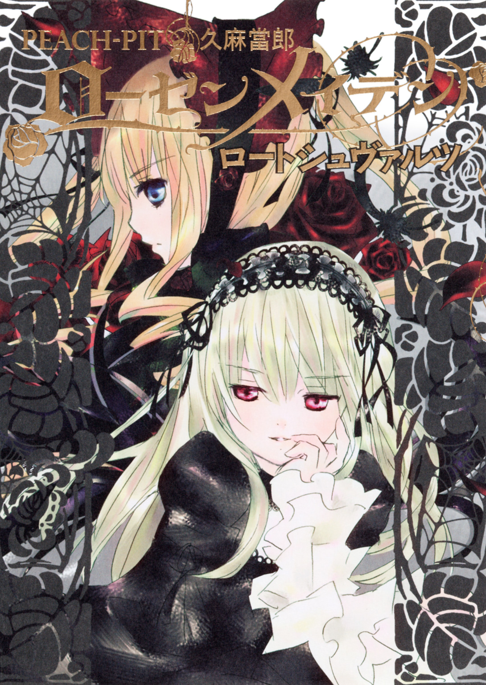
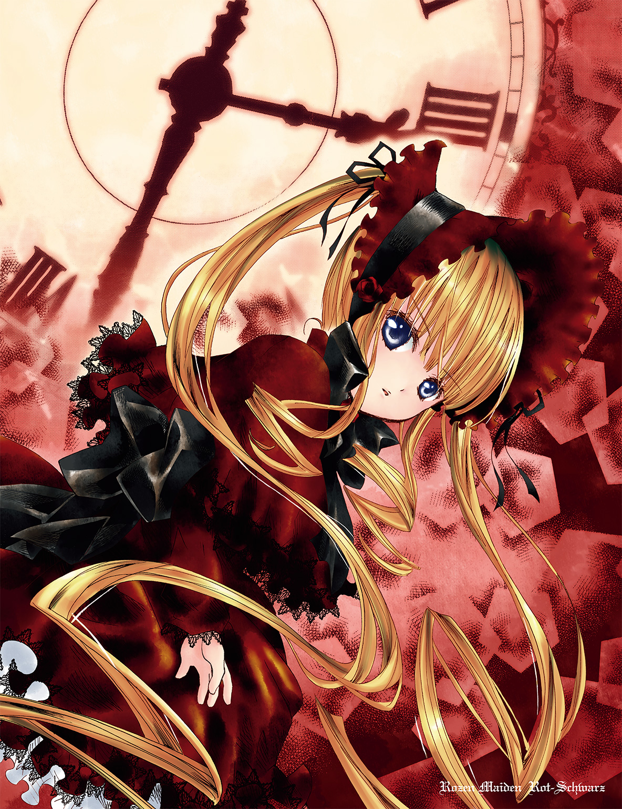
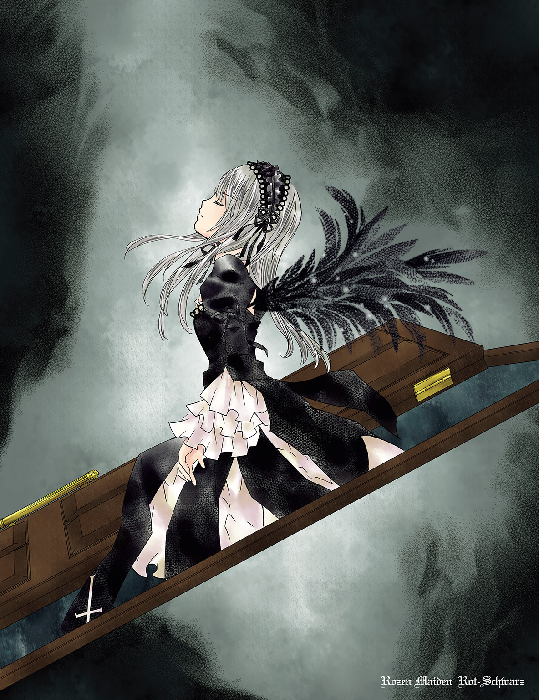
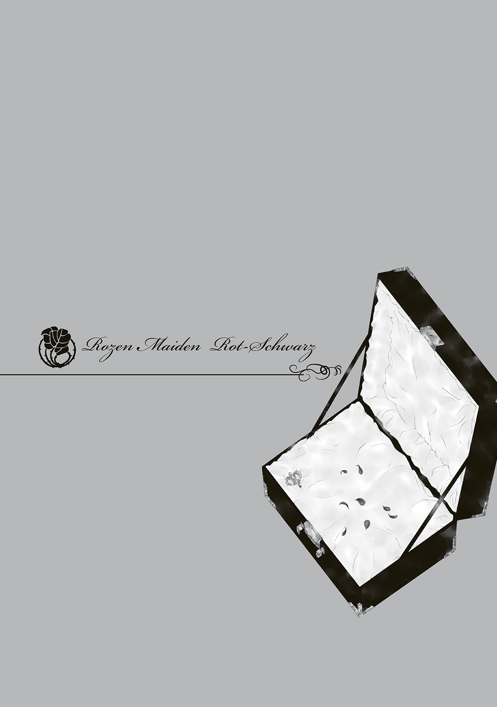
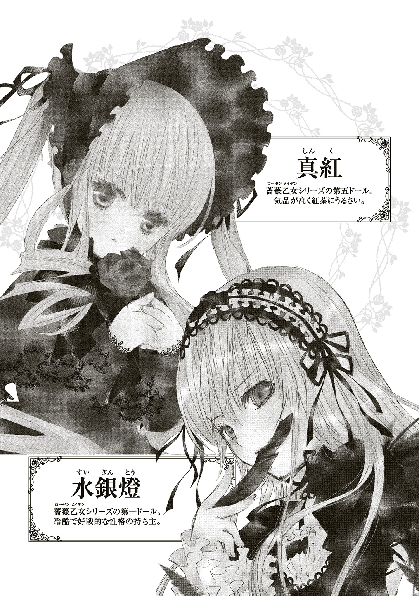
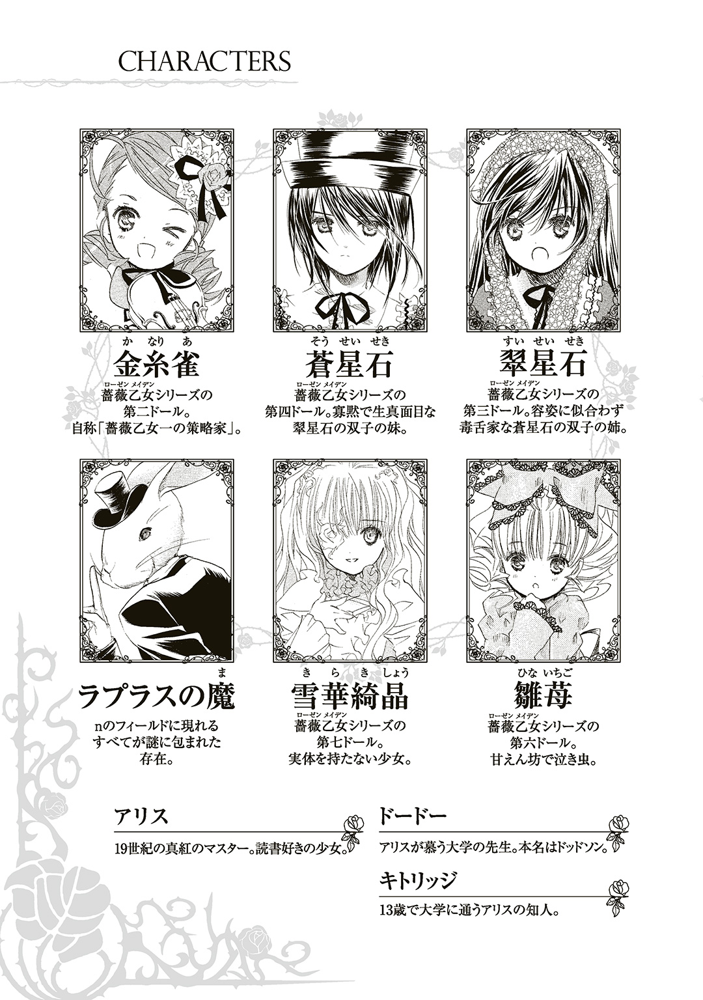
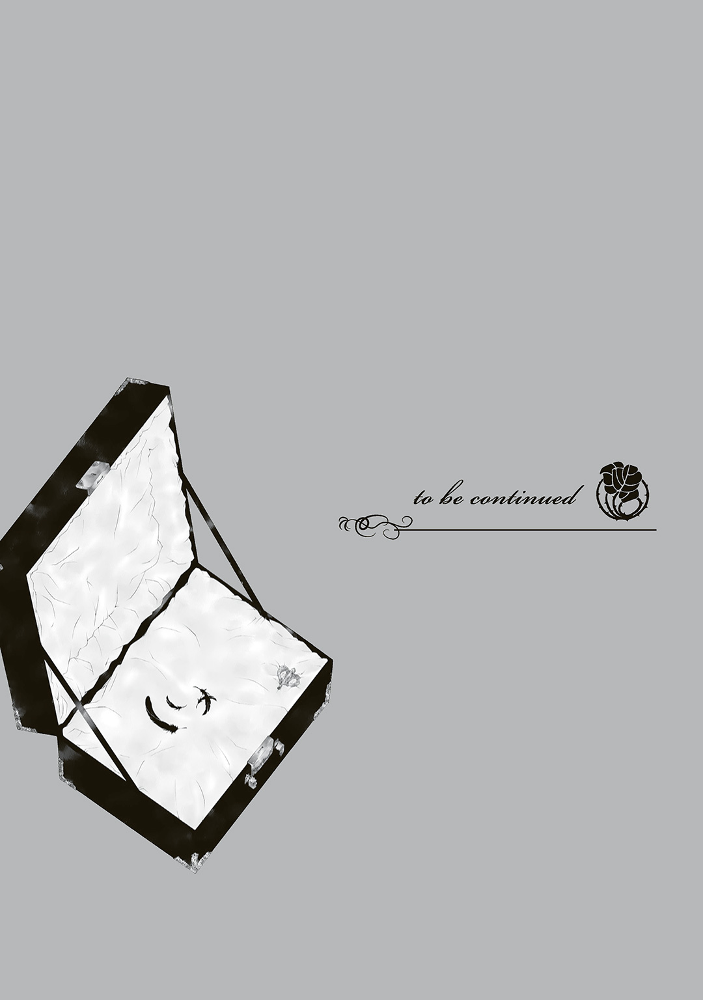

| ローゼンメイデン ロートシュヴァルツ | |
| PEACH-PIT & 久麻當郎 | |

この本は縦書きでレイアウトされています。
また、ご覧になる機種により、表示の差が認められることがあります。





「キツネ君、猿芝居はやめろ。もうネタはあがっているんだ」
「なんだって!? くんくんめ、いつからオレを疑っていたんだ！」
「ぼくの鼻はとっくの昔に、君から犯罪の匂いを嗅ぎつけていたのさ」
「ふん、なんの証拠があるんだ。アヒルの死体さえ見つかっていないのに」
「古典的なトリックだよ、キツネ君。きわめて古典的だ......。これを見ろ！」
「こ、これは......フォアグラじゃないか......！」
テレビ画面の中で、ハンチング帽をかぶったイヌ・くんくんが、キツネを追いつめている。大人気人形劇『たんてい犬くんくん』が今日の回のクライマックスを迎えている。
小鳥のさえずりが響く、静かな午後。ジュンの家の居間では、テレビの前のテーブルにせんべいと湯のみを置き、ソファの上でテレビをじっと見守っているアンティークドールがいる。せんべいと湯のみの存在を忘れ、目を凝らしてくんくんの一挙一動に集中しているドール・真紅は、後ろから誰かに見られていることにもまったく気づかない。
「あいつ、ホント好きだよな......」
「真紅が人形劇にあんなに夢中になっているって、意外だな」
ジュンと蒼星石が、周囲に目もくれずテレビにかぶりつきになっている真紅についてささやきあっている。
「シーッ、ダメですぅ。真紅のＫＴを邪魔したら、すっごく怒られるですよ！」
キッチンからやってきた星石が口に指を当てて、蒼星石を制した。
「邪魔するつもりは......」
「シーッ！ ......真紅がマジギレすると、あの巻き毛ウイップで首をからめとって絞首刑、っていうスペシャル技が襲ってくるです」
蒼星石の口を手で塞ぐ星石。蒼星石はおとなしく従った。
「真実はいつもオンリーワン！」
ジュンは離れたところから『くんくん』のクライマックスを観ている。
「......あいかわらず、視聴者の年齢層を無視したスリリングでハードな展開だな」
「――来週は、『ハリネズミ爆弾 危機一髪』だよ！」
くんくんによる予告で番組が終わると、真紅は肩の力を抜いてソファから降りた。
「今日もハラハラドキドキだったわ。......あら？ みんな、どうしたのかしら。何かあって、ジュン？」
「真紅がくんくんを観終わるのを待ってたんだよ。ＫＴの邪魔をすると『真紅スペシャル』で首絞められるって、星石が言うからさ」
「なんですって......？」
デタラメを言われたと知った真紅が怒りの視線を向けた。
「そ、そんなこと誰が言ったですか？ 星石は密かにチャンネルを替えようとしていたジュンの陰謀を阻止したですよ」
「ウソつけ、星石！」
「ジュン......そんな恐ろしいことを企んでいたの......？ 私のくんくんの時間を邪魔する者は承知しないわよ。二人ともその『真紅スペシャル』とやらを味わいたいのかしら」
一瞬、真紅の金髪がジュンと星石の首に巻きついて締めつける。
「ぐっ」
「きゅっ」
が、「真紅......」と蒼星石がいさめるとすぐに放した。
「コホッコホッ......真紅はほんとにくんくん好きですねぇ。きっと、世界一のくんくんファンですぅ」
「『たんてい犬くんくん』はね、ミステリーのツボをしっかり押さえているのよ。練られたプロット、好奇心をそそるダイレクトな死体描写、ひとクセもふたクセもあるキャラクター。私がミステリー好きなのは、にわかではなくてよ。ミステリーの本場・英国で培われたものなのだわ」
「ふーん、そういえば真紅の昔の話って、お茶の話以外、ほとんど聞いたことないな」
「話したことないもの」
興味を示したジュンの反応をさらっと受け流す真紅。
「......でも、あの頃のことを思い出すのは、とても楽しいわ。気が向いたから、少し話してあげましょうかしら」
「お、どういう風の吹き回し......」
からかおうとしたジュンの背中を、星石が引っ張る。
「ここはおとなしく話を聞くですよ。星石もほとんど聞いたことないですから」
そんなジュンと星石の様子を、真紅は微笑んで見守った。
「貴女も最初はあれだけジュンを怖がってたのにね......。私とあの時のマスターも、最初はケンカばかりしていたわ。あれはいつのクリスマスだったかしら。むかしむかし......」
真紅の口調はゆったりとして、まるで水面をすべるボートのようだ。
英国ではめったに降らない雪が、クリスマスイヴを楽しむオックスフォードの街を白く染めている。十九世紀、ヴィクトリア女王の治世下でも現代と同じくサンタクロースは信じられていて、家々では子供達が雪の街を眺めながらサンタクロースからのプレゼントを待っている。
煌々と炎が燃え盛る暖炉は、建物の外を覆う雪まで溶かしてしまいそうなほどの熱を発している。渋い銀色のオーナメントを飾った樅の木のそばで、真っ白な寝間着に身を包んだ女の子が窓の外を見つめている。
「サンタさん、まだかしら。アリスのお願い、ちゃんと聞いてくれたのかな......」
手にはくしゃくしゃになった手紙が握られている。アリスはその手紙を改めて開いた。
――ホー ホー！
はやく きみの ところへ いきたいな
あかいふくを ようい しなくちゃ
いいこは どちらを えらぶかな？
まきますか まきませんか
一週間前、アリスはサンタクロースに手紙を出した。クリスマスのプレゼントにあのお人形がほしいとお願いしたのだ。この数週間、アリスは街のとある店に飾ってあった、あるアンティークドールに夢中になっていた。何度も店のウィンドウを覗きこんだが、子供のおもちゃにしては高すぎる値札がつけられていて、両親に買ってほしいと言い出せず、その代わりサンタに願いを託したのだ。
アリスが手紙を出した翌日、封書が届いた。中に入っていたのがこの手紙だった。サンタからの返事だと固く信じ、アリスははしゃいだ。深い意味も考えずに「まきますか」に丸をつけた。
そしてイヴの夜、サンタに会うのを楽しみに夜更かししていたアリスはだんだん不安になってきた。
「サンタさん、いまどこにいるのかしら。今晩、世界中の子供達にプレゼントを配ってて、アリスのところまで間に合わないのかも......」
急に眠たくなってきて、アリスは床に座りこんだ。目をつぶると頭を床につけてしまった。
「――うわっ!?」
目覚めるとアリスはいつものベッドに寝ていた。朝の白い光に包まれ、昨晩のことを思い出した。
「サンタさんっ？ サンタさん、いっちゃった!?」
あれだけ楽しみにしていた夜が終わってしまったことに気づいて、どっと涙が溢れてくる。その時、アリスの目の前を明滅する小さな光が通過した。
「妖精......？」
まさか、と思って目をごしごしこすってみたが、それでも光は消えずに出窓のほうへと飛んでいく。アリスはベッドから跳ね起きて飛ぶ光を追いかける。天使の衣のような寝間着がふわっと広がった。もう少しで手が届きそうなところで、光がふっと消えた。
「あれ？ あれ？ いなくなっちゃった？」
自分の周囲を見回すが、飛ぶ光は見当たらない。
「あっ！」
アリスはもう一度、光が瞬くのを見つけた。出窓の外にいる光は、そのままスーッとアリスの家から離れていった。
「いっちゃった......うゆ？」
出窓に手をかけたアリスは窓際に見慣れない鞄があるのに気づいた。光を吸いこむような、暗く重厚な質感だ。なにか大事な秘密がこの鞄の中にある気がして、アリスは胸が高鳴った。鞄を床に下ろして開けようとする。
「ん......っ」
鞄はびくともしない。アリスはむきになって鞄のふたを揺さぶった。癇癪を起こしかけた時、ふたを押さえている金具があることに気づいた。金具を上げて鞄のふたに手をかけてみると、ふたは抵抗なく開いた。
「ふわああ......！」
アリスが鞄の中に見つけたのは、店に通いつめて眺めた、あの美しいアンティークドールだ。溢れんばかりの金髪、深い紅の生地でドレープの入ったドール服、頭を包んでいるボンネット。とりわけアリスの目を引いたのは、この上なく美しい顔だった。人形にしろ、絵画にしろ、ここまで美しい顔はこのドールに出会うまで見たことがなかった。ウィンドウ越しではなく間近に見ると、いまにも起きだしそうなくらいの瑞々しさがあった。
「すごい......」
アリスは恐る恐るドールの顔に触れた。冷えているにもかかわらず、触り心地は柔らかい。さっそくドールを鞄から抱き起こした。こんなに大きい人形を抱いたのは、初めてだった。ドールには大きさに見合った重みがあった。
「ほんとに生きてるみたい......」
その重みを慈しむようにアリスはドールを抱き続ける。
「だぁいすき......」
しばらく抱き心地を楽しむと、ドールと一緒に鞄に入っていた、植物のつるが巻きついた模様の金属細工を手にした。最初、これがなぜ人形と一緒に入っているのかわからなかったが、この不思議な形のものがあるものに似ていると気づいた。オルゴールのゼンマイを思い出したアリスは、ドールの背中に差しこんだ。その金属細工は背中の穴にきっちりはまった。期待が高まって、アリスはそれをせわしなくまきあげた。
「さあ歌って、お人形さん」
オルゴールみたいに音楽が鳴りだすことを期待して、じっと待った。キリ、キリ、キリと機械仕掛けの音がドールの中から聞こえた。わくわくするアリス。ドールはキリキリ音とともに上半身を起こした。そしてふわっと立ち上がる。
「わああ......！」
アリスが驚きの声をもらすと同時に、ドールの瞼が開いた。
「まったく、そんなに揺さぶらなくても鞄は開くわよ」
いきなりドールがしゃべりだした。
「わ、しゃべった！ お人形がしゃべったの！」
「貴女がゼンマイをまいたのね」
「うん、まいたまいた！」
「私は薔薇乙女第五ドールの真紅。貴女の名前は？」
「アリスよ！」
ひざを軽く曲げて挨拶した。
「アリス......？」
「どうかしたの？」
「ううん、なんでもないわ。アリス、私のローザミスティカを護ると誓うのなら、この指輪にキスをして契約を......」
アリスは真紅の手から白い薔薇を象った指輪を引ったくると、さっそく口づけをした。
「で、次はどうするの？」
「ええと、キスが先じゃなくて指輪をはめたらキスしてね。そうしたら、貴女は私のマスターになるのよ。......私の話をよく聞いて」
アリスは手をかざして自分の指にはめた白い指輪をうれしそうに眺めている。
「すてき......！」
「アリス、話を聞いて。その指輪をはめたからには、貴女は私のマスターよ。私のローザミスティカを護らなければならないのよ」
「ろおざ......みす......ちか？」
「ローザミスティカはね、私達薔薇乙女の魂のようなものよ。ローザミスティカが奪われれば、私は物言わぬただの人形になるわ」
「せっかくお話できるのに、そんなのイヤ」
「だったら、私のローザミスティカを護らなければならないわ」
アリスは首を少し傾げた。
「......なんだかむずかしそうなお話ね」
「そんなに難しくはないわ、......」
真紅は話の途中でアリスに抱えられた。
「ちょ、ちょっと、どこ行くの？」
「ドードーさんに話を聞いてもらうの！」
アリスはコートを羽織ると、真紅を抱えたまま外に飛び出した。
昨日降った雪も、街にはほとんど残っていなかった。アリスは石畳の道を軽やかに走る。
「おや、アリスちゃん。どうしたの、そのお人形？」
三軒隣の家のコベントリーさんが、アリスの抱えている大きな人形を指して尋ねた。
「サンタさんにもらったの！ きれいでしょ」
「おやまあ、良かったわねえ。お父さんお母さんに感謝しなくちゃね」
アリスはキョトンとした。
「どうして？ サンタさんにもらったのに」
コベントリーさんは微笑んで言い直した。
「そうね、サンタさんにお礼のお手紙を書かなきゃね」
「うん、書くね！」
アリスは再び走りだした。
扉を叩く音に部屋の主が応える。
「......はい、どなた？」
「アリスよ。ドードーさんに見せたいものがあるの」
「アリス？ こんな朝早くからどうしたんだい？」
ドアが半開きになり、部屋の主が姿を見せた。背の高いその男性は少し流行遅れのスーツをきっちり着ている。若くして大学の先生になったドードーさんは落ち着いた雰囲気の紳士で、アリスの父親と親しくしていた関係でアリスの良き友達になっている。本名はドッドソンだが、アリスには「ドードーさん」で通している。そのほうが呼びやすいし、親しみやすいからだ。
「どうしたんだい、その人形？ クリスマスプレゼントでもらったのかな？」
部屋の中にすべりこんだアリスが抱えている大きな人形に目がいった。
「そうなの！ サンタさんにもらったのよ。このお人形、すごいんだから」
アリスはさっそく真紅を床に立たせた。手を放すと、真紅は力なく床に倒れる。
「あれえ？ どうしたのかしら」
もう一度立たせてみるが、やはり倒れてしまった。アリスは真紅を抱えて揺すってみる。
「おかしいなあ」
「その人形、自動人形なのかい？」
「歩くし、しゃべるし、すごい人形なの」
「ほう、それはすごいね。どうやって動かすのかい」
「ゼンマイをまいたら動いたのよ。それでね、アリスこのお人形さんと契約したの。ほら」
左手の指輪をドードーさんに見せた。
「契約......？ それはただの自動人形じゃあないな」
「そうなの。『ろおざみすちか』とかむずかしいことをしゃべり始めたから、ドードーさんにも聞いてもらおうと思って来たのよ」
アリスは人形を抱き上げ、揺すった。
「しんくー、起きなさいよ。ドードーさんはね、大学の先生でとっても頭がいいの。それにね、アリスのいちばん大切なお友達で、ドードーさんには秘密のことでもなんでも話せるのよ。だから、......」
「それを早く言いなさいよ」
むくっと起きると、真紅はアリスの腕から床に飛び降りた。
「貴方はアリスのお友達なのね」
ドードーさんは一瞬口を開けて真紅を見つめていたが、胸に手を当ててお辞儀をした。
「チャールズ・ラトウィジ・ドッドソンです」
「さすが英国の紳士ね。私は真紅。薔薇乙女シリーズ第五ドールよ」
真紅はお辞儀を返して微笑んだ。
「ドッドソンさんじゃないの。ドードーさんなの」
アリスがドードーさんの足にまとわりつく。そんなアリスの様子に、真紅はクスッと笑う。
「ドードーさん、この子の理解を助けてあげてほしいの。この子には私の話が理解しづらかったみたい」
ドードーさんは何か言いかけたが、なかなか言葉が出てこない。口を半開きにしてしばらく真紅を見つめた。
「どこから来たの？」
「箱庭から」
「誰に創られたのかい？」
「お父様よ」
「人形なのになぜ動ける？」
「ローザミスティカがここにあるから」
「......ローザミスティカとはなに？」
「ローザミスティカは貴方達人間の『魂』みたいなものよ」
真紅は胸に手を当てた。
「ふむ......」
思いついた質問が尽きてしまうと、ドードーさんはソファに腰かけてこめかみに手をやった。アリスはドードーさんの横にちょこっと座った。
「私達薔薇乙女シリーズのドールは全部で七人。一人は七分の一、七人は一。元は一つのローザミスティカを七つの欠片に割って創られたドールだから。七分の一の欠片は一に戻さなければならない。だから私達は戦うの。至高の少女、アリスへと孵化するためにね」
「至高の少女だって......？」
「そう、至高の少女だけが再びお父様に会えるの」
「お父様に会えるのは一人だけなのか」
真紅はドードーさんの問いにうなずいた。
「『しこう』ってなあに？」
「いちばん優れているっていうことだよ。最高だってこと」
「アリス、最高なの!?」
「たまたま名前が同じだけだわ」
真紅がぴしゃりと言った。
「私達薔薇乙女はね、七人の姉妹同士でアリスゲームを始めなければならないの」
「アリスゲーム......それってどんなゲームなの？ チェスみたいなの？ それともクロッケーみたいにボール使うの？」
「私にもよくわからないわ。まだ始まってないんですもの。ただわかっているのは、マスターの力を借りて、姉妹同士で戦わなければいけないことよ。お互いの存在を懸けて、お互いのローザミスティカを奪い合うの。奪われれば、物言わぬ人形になってしまうわ」
「ねえ、アリスは真紅の『ますたあ』になったけど、『ますたあ』ってなあに？」
「マスターは『主人』ってことだよ」
「アリスは真紅の主人になったのね。じゃあ真紅、お菓子持ってきて！」
「......そういうのじゃないの」
真紅は少しいらついた。
「薔薇乙女は誇り高き存在なの。そのマスターになったからには、貴女も威厳を持って頂戴。契約を受け入れたのは貴女だけれど、貴女を選んだのは私の人工精霊・ホーリエよ。この出会いは偶然ではないのだわ」
ソファに身を沈めていたドードーさんは、うーむとうなって体を起こした。
「ぼくは奇想天外なお話が大好きだけれども、こんな話は初めて聞いたな。世の中にはいろんな人がいる。ぼくのように受け入れようとする人だけじゃなく、存在を認めようとしない人もいるだろう。きっと真紅のようにしゃべって歩く人形が世間に知られたら、騒ぎになってしまう。真紅のことは秘密にしておいたほうがいい」
「私もそのほうが都合がいいわ。見世物にされたくないもの」
「わかったかい、アリス？」
「うん、そうする！ お外歩く時とか、知らない人の前とか、真紅は普通の人形になってね」
「あら、わかってるじゃない。賢い子ね」
「そうよ。アリス、賢いんだもん。大人の本も読めるんだもん」
「そういえば、買っておいたよ。今月のストランド・マガジン」
「ああっ、さすがドードーさん気がきくぅ、ありがとう！」
アリスはテーブルの上にあった本に飛びついてせわしなくページをめくった。アリスのお目当ては『ボスコム谷の惨劇』だ。
「ロンドンの名探偵、シャーロック・ホームズの推理小説なの。とっても頭がよくて、ボクシングもできてケンカも強いのよ。なんでも推理でお見通しなの。これこれ、この右の人！」
雑誌を開いて挿絵を見せた。列車の座席に男が二人座っていて、片方はシルクハットに口ひげ、片方は覆いのある鹿撃ち帽をかぶってメモをとっている。
「ミステリーは読んだことないわ。盗みとか人殺しとか、そういう物騒なお話でしょ？ 私の趣味ではないわ」
「真紅、遅れてるう」
「遅れていて結構だわ。アンティークドールだもの」
真紅はムッとして言い返した。
「まあまあ、お茶にしようじゃないか」
ドードーさんが紅茶の缶を見せた
「わーい、モーニングティーね。アリス、お手伝いする！」
いそいそとカップを並べ、戸棚からビスケットを出して皿に載せる。
「モーニングティー......」
「紅茶は好きかい？」
「ええ、箱庭でもお茶はよくしていたわ」
「お人形さんでも飲めるんだ!?」
「真紅、英国では一日に何回もこうしてお茶をするんだよ。モーニングティー、ミッディティーブレイク、ハイティー、ってね。英国人には紅茶の血が流れているんだよ」
薔薇の花が描かれたティーカップから温かい湯気が立つ。
「熱いから気をつけて」
真紅は、深い赤色の紅茶の入った、ちょっと真紅にはサイズの大きすぎるティーカップを口に運んだ。アリスが興味津々でその様子を見守っている。
「とてもおいしいわ」
「キャ――！ アリスのお人形はほんとにお茶が飲めるのねー！」
両手を組んでキュンとなったアリスがはしゃぐ。
「おばあちゃんからもらったお人形さん用の小さなティーカップ、真紅にあげるね。すてき！」
興奮してテーブルの周りをぐるぐると走っているうちにテーブルの足につまずいた。テーブルの上のカップから紅茶がこぼれる。
「いったーいっ！」
「この子がマスターで大丈夫かしら......」
真紅はティーカップを傾けながらぼやいた。
オックスフォードの街は、大英帝国屈指の名門大学を中心に広がっている。中心街は馬車や蒸気自動車が行き交い、人の往来も多く、通りに面した店には華やかな商品が並び、都会のにぎやかさがある。アリスの家は大学のほど近くに位置し、剝き出しになった太い梁が力強い線を描く、重厚なテューダー様式の建物だ。中世からある大学街にふさわしく、古めかしい家の中で、今日も真紅とアリスが言い争いをしている。
「返しなさい」
「やーなのー。真紅のものじゃないもん」
「貴女はもう読み終わったでしょう？」
「もいっかい読みたいのー！」
「私が読み終えてからにするのだわ。『シャーロック・ホームズ』を独り占めするなんて犯罪的なことは許さないわ」
「『物騒』とか『趣味じゃない』とか言ってたの、どこの誰だっけぇ？」
「あら、そんなこと言ったかしら」
「ふーん、とぼけるわけね。ならいいの。今回の凶器は『毒蛇』だったの」
「なっ、そんな掟破りのネタバレを......」
「へへーん、ざんねんでしたー」
アリスは本を胸に抱えながら真紅に向かって舌を出した。
「まったく、それがレディのすることかしら」
「いいんだもんね。アリス、レディになんてならなくていいんだから」
ちょっとむくれたアリスは、引き出しから何かをごそごそ取り出すと真紅に見せびらかした。パイプだ。
「アリス、レディじゃなくてホームズになるんだもん。このパイプを手にしてバシバシ鋭い推理をしちゃうから。もちろんきみも一緒だよ、親愛なるワトスン君」
嘆かわしい、といったふうに真紅が首を振る。
「貴女がホームズみたいな名探偵になるのは無理だわ。推理なんてさっぱりできないじゃないの。それに、パイプをいじっちゃだめとお父様に叱られたでしょう？」
「口にくわえなければだいじょうぶなのよ」
「いけないわ。渡しなさい」
「やーだ。真紅は自分がホームズをやりたいだけなんだから」
「私のほうが推理が得意なのだから、私がホームズ、あなたがワトスン君をやるのが自然なのだわ」
「ぜったいわたさないもん！」
真紅はアリスの手からパイプを奪おうとする。アリスはさっとかわしてパイプを持つ腕を上げた。
「ほーら、とどかないでしょ？ やーいやーい」
「......いいかげんにしないと怒るわよ」
「あっかんべー」
アリスの腕が下がった隙に、真紅がジャンプしてパイプを奪い取る。
「こらっ、返して！」
パイプを持った真紅が逃げ、アリスが追いかける。部屋の中で追いかけっこが始まり、バタバタと騒々しい足音が響いた。
テーブルを挟んで、ゼエゼエ息を吐きながら牽制し合う真紅とアリス。だが、アリスは突然にらみ合いをやめると、クローゼットから帽子を取った。
「どうしたの......？」
「むしゃくしゃするから外に行くの！」
――まったく、bébéなんだから――
「ほら、返してあげる」
真紅は折れてパイプをテーブルに置いた。ところが、アリスはパイプではなく真紅をつかんで抱えると、ドアに向かって駆けだした。
「ちょっと......あぶなっ！」
真紅の頭がぶつかる寸前でアリスは止まって、ドアを開ける。
「至高の少女と同じ名前とは思えないわ......」
腕に抱えられた真紅のぼやきはアリスの耳には届かない。
薄ら寒い春の空気が遠ざかり、夏らしい太陽がゆっくり傾いていく。アリスはいつもの道をわき目もふらずずんずん歩いた。ドードーさんの住む学寮はセント・アルデーツ通りに面した大学、クライストチャーチ・カレッジの敷地内にある。大きな正方形の庭園を囲っている建物群は左手が学寮になっていて、階段で二階に上がったアリスは迷わず二つ目のドアを叩いた。
「アリスと真紅、どっちがホームズだと思う？」
ドアが開くなりアリスが大声でドードーさんに質問する。
「ん？ どういうことだい？」
「二人でホームズごっこするなら、どっちがホームズをやるのがいい？」
「まあ、玄関で立ち話もなんだから、入らないかい？ お茶をいれるよ」
むすっとしたアリス、抱えられた真紅が招かれるまま部屋に入る。ドードーさんはティーカップを洗ってから、いつものように熱い紅茶をアリスと真紅のカップに注ぎ、小さなビスケットを添えて供した。
「難しい質問だね。二人とも熱狂的なホームズ・ファンだから、どっちがやってもふさわしいと思うけど」
「どっちか選んでくれなきゃやだ。どっちがホームズか、答えて答えて」
「そうだなあ、どちらか一人というのならアリスかな」
「やっぱり！」
アリスは跳び上がって喜んだ。
「ドードーさんはアリスに甘いんだから」
真紅が不平を述べると、ドードーさんはティーカップを持ち上げて苦笑いした。
「この子、推理なんてちっともできなくってよ」
「できるもんね。ドードーさんのこと、バチバチ推理しちゃうから」
「それは頼もしいね。一つ、推理してみてくれるかい？」
「そうねえ......」
アリスがこぶしをあごに当て、ドードーさんのことを目で探っている。しばらく観察した後、ゆっくりとした口調で、推理を披露した。
「ドードーさんはね......けさ遅刻した！」
「ほう、それはどうしてだい？」
「いっつもしている指輪がないの」
ドードーさんは左手を触って微笑んだ。
「たしかに指輪がないね。どうして指輪をしてないと、遅刻したことになるんだい？」
「うんとね、遅刻して慌てて大学に行ったから指輪するの忘れた。そうでしょ？」
「ぼくは今朝、ちゃんと遅刻せずに大学に行ったよ」
「あれえ？」
アリスは首を傾げた。
「ドードーさんはティーカップを洗う時、いつも指輪を外しているわ。だからよ」
「真紅はよく見てるね。たいしたもんだ」
「ふんっ」
アリスは真紅にしてやられてふくれ面をした。
「とてもよい香りだわ。茶葉の種類はなんというのかしら？」
「ニルギリだよ」
ドードーさんが真紅の問いに答えた。
「あら、ニルギリってこんなに香りがふくらむものかしら？」
「それはね、温度に秘密があるんだよ。ぼくの発明したやかんつかみを使うと、お湯が熱いまま入れられる。紅茶は九十五度以上でいれるのがいちばんおいしいんだ」
自慢げに、やかんをつかむための無骨な器具を見せた。
「いままでずっとお茶をしてきたけれど、温度については初めて教わったわ。ドードーさんは物知りなのね」
「むすーっ」
アリスはテーブルにあごを載せたまま、ぶんむくれている。その姿を目にして、真紅は昔のことを思い出した。
「そのふくれよう、まるで妹みたいだわ。雛苺という名前で、貴女みたいに一度機嫌を損ねると始末に負えない子だったわ。薔薇乙女は七人の姉妹だと前に教えたでしょう？ だだっ子で、強情で、わがままで、泣き虫なところがそっくり」
「アリス、泣かないもん」
「本当にそうかしら？ そんな子がシャーロック・ホームズ役を演ろうなんて、大根役者がマクベスを演じるくらいふさわしくないのだわ」
「むー......」
二人を見比べていたドードーさんが口を開いた。
「ところで、今日は教会で奇妙な話を聞いたよ。その話、聞きたいかい？」
「うん！」
ふくれ面は消え、アリスは勢いよく返事した。
「午前の授業を終えて大学の中にある教会に寄ったら、執事がぼくを見るなり耳打ちしてきたんだよ。『ちょうどよかったです。昨晩のことが気になって、おちおち眠れませんでした。先生に打ち明けてすっきりさせてください』とね。『どうしたんだい、目の下に隈を作って。なんでも話してごらん』と促すと、執事はギョロッとした目をさらに見開いてこう言ったんだ。『この聖堂に、悪魔がいます』」
話に耳を傾けていた真紅は、いきなりアリスに腕をつかまれた。
「び、びっくりするじゃないの」
アリスは怖いけれど聞くのをやめられないという表情でドードーさんを見つめている。
「『悪魔だって？ ずいぶん古風なものが出てきたじゃないか』とからかってみたところ、執事は真剣に悪魔について語り始めたんだ。でも、あんまり目を見開いたので、話がはずむとギョロ目を落っことしちゃって、拾いながらまたしゃべったりって、忙しかったよ」
きゃはは、とアリスが笑った。
「執事が言うにはね、その悪魔は聖堂の天井辺りにいて、歌を口ずさんでいるらしい」
「どんな歌かしら？」
真紅が尋ねると、ドードーさんは首を振った。
「彼がまねしてくれるんだけれど、しゃがれ声で、おまけに音痴ときたもんだから、どんな歌かさっぱりわからないんだよ」
「それじゃあ、悪魔かどうかわからないのではなくて？」
「ところが執事はね、完全に悪魔だと信じているんだよ。天井の辺りを飛び回っているというから、困ったものだ。コウモリかなにかが迷いこんだだけかもしれないのに。教会に悪魔が居着いているなんて騒ぎ立てられたら、悪魔祓いをしなきゃならなくなるかもしれないじゃないか」
「悪魔祓い......！ こわぁい......」
アリスの顔から血の気が引いた。
「ちっとも怖くなんかないわ」
と言いながらも真紅の顔はこわばっている。
「もし悪魔祓いをするとしたら、ドードーさんがするのかしら？ たしか神父さんでもあるって聞いた覚えがあるわ」
「はは、無理だよ。ぼくは聖職者でもあるけれど、そんな中世の真似事はできない。大学にある古文書を紐解けば、やり方は残っているかもしれないけどね。真紅は悪魔に興味があるみたいだね」
「悪魔に、というよりも人間ではない存在に興味があるわ。物言う人形としてはね」
「なるほど。そういうことか」
ドードーさんが納得すると、突然、
「やめてー！」
とアリスが耳をふさいで叫んだ。
「もっと楽しいお話がいいの！」
「ごめんごめん、もう悪魔の話はやめにしよう」
「ドードーさんのいつもみたいなお話が聞きたいの」
「そうだね......今日はいつもとはあべこべに、アリスがお話を作るってのはどうだい？」
「うゆ......お話ってどうやって作るの？」
「気の向くまま、思いついたことをしゃべってしまえばいいのさ。一つコツを教えてあげよう。出だしはね、必ず『むかしむかし』で始めるんだ。『むかしむかし』で始まる物語は、きっと面白いものになるから」
アリスは独り言のようにつぶやく。
「むかしむかし......むかしむかし......むかしむかし」
「ちっとも話が進まないじゃない」
「真紅は邪魔しないの！」
真紅は軽く舌を出してアリスをからかった。
街の大学内にある教会の鐘が日曜日の朝を告げた。アリスはいつもの日曜日と同じように、両親とともにミサに来た。真紅もアリスの腕に抱えられて一緒にミサに参加する。
教会の礼拝堂は、天にも届きそうなくらい高い天井の内側に、鮮やかな色彩のステンドグラスが聖書や英国王の物語を描いている。真紅は、日曜の礼拝に参加するのが好きだ。街の人々が一堂に会して聖歌を歌い、司祭が聖書を読みあげるのに黙って耳を傾ける。壮麗な造りの礼拝堂は、祈りの場にふさわしい厳かな雰囲気を作り出していた。アリスや他の人がひざまずいて祈りをささげている間、真紅は椅子に乗ってその光景を眺める。
――箱庭にはなかったことだわ――
真紅たち薔薇乙女がずっと過ごしていた箱庭の世界では「祈り」は存在しなかった。あえて比べるなら、真紅や他の薔薇乙女達が創り主である「お父様」を求める気持ちは、神を求めての祈りに近いものがあったかもしれない。真紅はあの時の切迫した感情を思い出して天井を仰いだ。箱庭の天井には、空を写した作り物の天体が描かれていた。この聖堂の天井を支えるヴォールトには、主柱と主柱を結んだ対角線とその対角線を取り囲むような幾何学模様が描かれている。
――この模様にはどういう想いがこめられているのかしら――
砂漠の薔薇のような模様を見つめていると、ふと気配を感じた。
――天井に、誰かいる？――
目を凝らして天井近くの窓の辺りを見回したが、何かが動く様子はなかった。
――気のせいかしら――
真紅が感じたのは、懐かしい気配だった。まるで姉妹の誰かが近くにいるような、そんな気配だった。まさかそんなはずないわ、と思い直してもう一度天井を仰いだ。高く、荘厳な天井は数世紀前からそうであったように揺るがなく存在し、動く影は何一つない。真紅はアリスに視線を戻した。いつものおてんばぶりとは打って変わって真剣に手を合わせている愛らしい姿を、真紅は愛おしく見つめた。
礼拝が終わり、人々が順に外へと向かっている。少年の声がざわついている礼拝堂の中でも特別大きく響いた。
「だから、悪魔は本当にいるんだって。世界を創造した神様が悪魔も創造したんだよ」
――悪魔......？ 数日前のドードーさんの言葉を思い出した真紅は、少年の声を聴こうと耳を澄ませた。
「聖書の中にもちゃんと書いてあるんだから、悪魔は実在するんだよ。それとも聖書に書いてあることが間違ってるって言うの？」
少年は利発そうな口調で言葉をたたみかける。周囲の大人が「教会で悪魔なんてとんでもない」とたしなめても口を閉じる様子はない。
「悪魔っていう存在が悪いんじゃない。悪魔だって好き好んでこの世界に降り立ったわけじゃないんだから。悪魔が嫌いなら、誘惑されなければいいだけさ。毛嫌いするのは、悪魔に誘惑されたら簡単に乗ってしまう弱い人間だっていう自覚があるんだよ」
アリスが振り返って顔をしかめた。
「キトリッジって、いっつもうるさいんだから。理屈っぽいし、なまいきだし。ああやって周りの人を困らせて喜んでるの」
真紅に少年の悪口をささやく。アリスは自分よりも少し歳上のキトリッジのことが嫌いのようだ。とうとう我慢できなくなって、キトリッジに近寄った。
「悪魔悪魔って、うるさいわ。そんなに悪魔、悪魔って言うんなら、悪魔と契約しちゃえばいいのに」
「悪魔と......契約......？ シーッ、そんなこと口にしてたら悪魔が寄ってきちゃう。子供のくせに生意気な口を利くとひどい目に遭うぞ」
「そっちだって子供じゃないのっ」
赤毛を逆立てるキトリッジとアリスが言い合いになるが、二人の親達がすぐに引き離した。
教会を後にして家に帰る途中、アリスは腕に抱えている真紅に向かってキトリッジの悪口を言い続けていた。
「キトリッジって、おじいちゃんが大学の学長さんでちょっと頭がいいからって、いばってるんだから。キライ。大学の先生に勉強を教わってるのをいつも自慢してて、まるで大学生気取りなのよ」
しばらく黙って聞いていた真紅がささやいた。
「貴女......一人で人形に話しかけるおかしい子になってるわよ」
「だって真紅が話してくれないから、一人でしゃべるしかないもん」
「私は外ではただの人形になるっていうのが約束でしょ？」
「うゆ......そうだけど、他に話を聞いてくれる人がいないんだもん。真紅はアリスの話を聞いてくれるでしょ？」
「聞いてあげてもよくってよ」
「うふ、ほんとは真紅だってアリスの話聞くのが好きなくせにぃ」
真紅を抱きしめてアリスは家路を急いだ。
夜が更け、アリスがベッドで静かに寝息を立てている。真紅は鞄からむっくりと起き上がり、部屋の隅にある鏡に向かった。ロココ調の装飾のある、古めかしい鏡に手を伸ばすと、鏡面が水面のように波打ち、真紅は吸いこまれていった。
人のいなくなった聖堂では、灯された蠟燭がゆっくりと背丈を減らしている。蠟燭は主の両脇に仕える使徒像を照らし、礼拝堂の壁に映った影が揺らめいている。
「ふうん、祈りとやらは悪いものではないわね」
聖堂のはるか上、大天使を描いているステンドグラスの横から祭壇を見下ろしてつぶやく者がいた。
真紅がｎのフィールドに戻ったのは久々のことだ。たくさんの世界が交錯する、どこでもあり、どこでもない場所――。真紅は無数の扉から一つを選び出した。たどり着いた先には鞄が並んでいる。
「おや、紅のお嬢さん、ごぶさたで。どうしてここへ戻ってきたのですか？」
ラプラスの魔はシャッポを脱いで挨拶した。
「私のことはご心配なく。他の姉妹がどうしているか気になって来たのよ」
「おや、いよいよアリスゲームに本腰を入れる気になりましたか」
「そんなつもりはなくってよ。いま、ここに誰がいるのかしら？」
「双子の姉妹は仲良く眠っていますよ」
「星石と蒼星石ね。本当に仲がいいわね。いつも一緒だわ」
「一番目と二番目の二人は相変わらず外の世界を飛び回っていますな。ｎのフィールドに戻ってくる気配がありません」
「水銀燈も金糸雀も、いいマスターを見つけたのね」
「さあ、それはどうだか。黒のお嬢さんを飼いならせるマスターがこの世にいるのかどうか、クク」
ラプラスの魔の言葉が真紅には引っかかった。
「どういうことかしら。水銀燈はマスターなしに外の世界で過ごしていると？」
「さあ、私はしょせん曖昧な空間を行ったり来たりするだけの道化。はっきりしたことはなんとも言えません」
ラプラスの魔の独特な言い回しは、真紅を不安にさせ、苛立たせた。
「......二人いないということがわかったからそれでいいわ。あともう一人、私の妹はどうしているの？」
「ああ、雛のお嬢さんですか。あの子はしばらく前にここを発ちました。いちばん頼りないかと思いましたが、どうしてどうして、幼い羽で羽ばたいておりますな。案外、アリスゲームが始まれば、いちばん手強いかもしれませんよ」
「そうした安易な挑発には乗らなくてよ」
真紅は踵を返した。
「もう、帰られるので？ 紅のお嬢さん」
「用が済んだからいいの」
足早に去ろうとする真紅を呼び止める。
「新しいマスターと契約して充実しているというところですか」
「耳が早いのね」
「この耳ですから」
上向きに立った細長い耳を指した。
「それぞれ外の世界で咲き誇っている薔薇乙女達が、いつ、からまりあって争い合うかわかりませんよ。心しておいたほうがよろしいかと」
「貴方に言われなくてもわかっているわ」
振り返ることなく真紅は立ち去った。苦手なラプラスの魔との会話を終え、ほっとして元の世界へ戻っていく。
「別に怖くなんかないわ、ホーリエ。彼とは会話の相性が悪いだけよ」
真紅は自分の周囲を飛んでいる人工精霊・ホーリエに向かって話をしながらｎのフィールドを出る扉を探した。
オックスフォードの街に夜が訪れる。昼にはたくさんの馬車が行き交う通りもいまは静かになり、石畳を踏む足音が寂しく響く。夜は、密かに動く者達にとって格好の時間帯だ。泥棒、探偵、あるいは秘密の仲にある男女......。夜の闇はその者達を人目から覆い隠してくれる。
しとしとと降る霧雨の中、外套を着た人影が裏通りを縫っていく。その人影は足早に進んで、大学の敷地へとすべりこんだ。
礼拝堂に入った人影は祭壇に向かって十字を切ると、外套を脱がずに礼拝の末席に身を置いた。うつむいたままじっと動かず、何かを待っている。
新たに一人、礼拝堂に入ってきた。軽装の若い男が中を見回し、先に来ていた礼拝者を見つけた。若い男と先に入っていた者は互いに駆け寄ると、その場で抱き合った。
「やっと二人になれたわ、カイル......」
先に来ていた者は頭を包んでいたスカーフを解く。編みこんだ赤毛が現れた。その若い娘は、男と頰を合わせた。
「こんなふうにしか会えないなんて、辛いよ」
「しかたないわ。いつかきっと理解してくれる時が......」
「来るかな......？」
二人はもう一度強く抱き合った。
新たな訪問者がやってきて、若い男女は慌てて立ち去った。その訪問者は、入り口で音を立てまいと気をつけながら階段を上る。二階から礼拝堂を見下ろしてキリスト像を一瞥してから、さらに上を目指した。大人一人が辛うじて通れるくらいの狭いらせん階段を時計回りに上ると、礼拝堂の屋根近くにたどり着いた。下から見上げると途方もなく高く見えるヴォールトの装飾が間近にある。外からの光がなく、一階に灯されている蠟燭の灯りを受けて、ステンドグラスは昼間と違って暗く沈み、模様はわずかに確認できる程度だ。
その訪問者、キトリッジは目を凝らして薄暗い屋根を見回した。
「......やっぱり悪魔なんていないのかよ」
舌打ちして、高揚している気持ちのやり場を探した。礼拝堂の中央に目がいく。
「塔にはどこから入れるんだ？」
礼拝堂は縦長の建物で、中央に尖塔があり、そこの天井が一段と高くなっている。
「どうやったらあそこに登れるんだろ？」
キトリッジは細い通路を行ったり来たりしているうちに、さらに上へと抜ける通路を見つけた。先ほどの階段より狭い通路で、壁からちょっと浮き出ている程度の足場が縦に並んでいるだけだ。迷うことなくキトリッジは足場に手をかけ登った。通路を抜けて顔を出すと、目の前が塔の下の空間で、一階の床まで遮るものは何もなかった。
「行き止まりか」
塔の部分に入れないもどかしさに壁を叩いた。その音が礼拝堂全体に反響する。ふと壁に視線をやると、先ほどの頼りない足場がさらに続いているのに気づいた。しかし、今度は落ちたら一階に真っ逆さまだ。キトリッジは一歩一歩慎重に、壁を伝うように登り続けた。ついに塔の内部に入り、行き止まりまでたどり着く。
――あそこが時計台の内部だな――
キトリッジが最後の段に手をかけて屋根裏を覗きこんだ。すると、目の前に誰かが立っていた。人間にしては小さすぎる背丈に、キトリッジはぞっとした。
「お、お前は......？」
黒いドレスをまとったその存在は、ゆっくりとキトリッジに近づいた。
「お前は......悪魔？」
「あら、悪魔だなんて。失礼な人間ね」
薄暗く雑然とした空間に場違いなほど美しいその存在は、超自然的なオーラを放っている。
その者が腕を上げるとドレスの裾模様が見えた。
「逆十字......！ 悪魔でないのなら、お前はなんなんだ!?」
「誇り高き薔薇乙女第一ドール、水銀燈に向かってなんていう口を利くのかしら、この子供は」
「ドール......？ そんなわけ......」
水銀燈が羽根を一つ手にすると、炎がついた。その羽根をふわっと飛ばすと、柱のそばに残されていた蠟燭にたどり着いて火が灯った。暗い屋根裏の空間が照らし出され、水銀燈の姿が浮かび上がる。キトリッジは屋根裏に登り切ると、ゆらめく光の中、目を凝らしてその姿を見つめた。黒い羽根飾りのついたフリルたっぷりのドレス、銀色に輝く髪、冷たく光る赤い瞳。白い肌の質感からは人形だと信じられなかった。キトリッジは思わずドールに向かって両手を伸ばした。水銀燈はその手をすりぬけて大きく翼を広げ、ふわりと空中に飛び出した。
「......飛べるのか！」
危うく落ちそうになったキトリッジは柱にしがみついた。目の前で超自然的な力を見せつけられ、畏れを抱いたキトリッジは自然と頭を垂れた。水銀燈は床に這いつくばったキトリッジに微笑みかけた。
「そう、いい子ね......」
畏れて萎縮しているキトリッジを見下ろしていると、ふと苦い記憶がよぎった。
――「神も、父も、私には要らないの。自分という人間しか信じない。私は一人でやっていけるの。わかった？」――
「貴方は神を、悪魔を信じる？」
「......はい」
キトリッジの従順な返事に、水銀燈は尋ねた。
「じゃあ、私を悪魔のように崇められるかしら？」
頭を垂れていたキトリッジは、苦しげに顔を歪めて水銀燈の姿を見上げた。
「はい」
「ふふん、いい子だこと」
水銀燈は満足げに微笑んだ。
「......実は、どうしても叶えたい願いがあってここに来たんだ。あなたの力を貸してほしい」
「あらぁ、いったいどんな願いなのかしら？」
「それは......」
キトリッジは口ごもった。
「願いも口にできないのにすがろうなんて、なんて虫のいいこと」
軽蔑を露わにして立ち去ろうとする。
「待って、いま話す！ ......大切な人を、取り戻したい。昔はいつも一緒だったのに......邪魔する奴らがいるんだ」
「あらあ、貴方の大切な人？ フフッ、どんな関係なのかしら」
キトリッジはしばらく黙りこくった。
「だから、契約を......してほしい」
水銀燈の顔つきが険しくなった。
「契約ですって？ ......悪魔と契約すれば力が得られると信じているわけね。私もかつては人間と契約を結んだことがあるわ。でもいまはね、そんな気はさらさらしないのよ」
「そんな......」
「契約したらタダで大きな力が空から降ってくると思って？ 契約って、大きな犠牲を払うものなのよ」
キトリッジはうなずいた。
「かまわない」
「バカじゃないの」
水銀燈の侮蔑が混じった微笑みはキトリッジの目に神々しく映った。
「契約を軽く考えている人間なんて信用ならないわ」
「そんな......」
「契約契約って言うけど、大切な人とやらを誰かに取られたのなら、その誰かを引きずり落とせばいい話でしょ」
「引きずり落とす......？」
「鈍い子ねえ、なにか罪を着せるとか、自滅するように仕向けるとか、それくらい自分の手でできるでしょ？」
キトリッジはそれを聞いて閃いた。
「あっ......はい......たしかに――――できる......！」
急にある計画がキトリッジの頭の中で持ちあがり、恐ろしい速さで組み立てられていった。
久々にすっきりと晴れてすがすがしい夏の午後、真紅はアリスに抱えられてオックスフォードの街を見物している。表通りは花屋、家具屋、パブ、ブティックなど様々な店が並び、ショーウィンドウにはきらびやかな商品が並ぶ。小麦粉袋を担ぐ労働者、ウィンドウショッピングを楽しむ婦人、馬車に乗って先を急ぐシルクハットの紳士など、様々な人が通りを行き交っている。最初の頃は活気のある雰囲気に驚いて目を丸くしていた真紅だが、最近は慣れっこになりつつある。アリスは騒がしい通りを軽やかに抜けていき、ドードーさんの住む学寮へと向かった。
アリスはドードーさんの部屋のドアを叩いた。しばらく待つが、反応がない。
「ドードーさん、ドードーさん」
もう一回ドアを叩いた。
「この時間にいないなんて、おかしいわ。いつもなら必ずいるのに。どうしたのかしら」
「ドードーさんいないの？ アリス、さびしい......」
アリスはドアに寄りかかって落ちこんでしまう。
「こういう時こそ推理なのだわ、アリス」
「すいり......？」
「推理を働かせてドードーさんを探しましょう」
真紅がアリスを励ました。
「えっ、どこに？」
「きっと大学のお仕事が遅くなっているのだわ。大学へ行ってみましょう」
「大学！ 大学に行ってみる！」
パッと明るい顔になったアリスは、階段を駆け下りる。
「ちょ、ちょっと、そんなに揺らさないで」
ガクガクに揺さぶられている真紅が文句を言った。アリスはまったく聞かずにそのまま一階まで下り切った。
「まったく、レディにはほど遠いわ......」
「なんか言った？」
「まあいいわ。早くドードーさんのところへ行きましょう」
「うん！」
「ドードーさんの仕事場は図書館にあるって言っていたわ。まず図書館を探しましょう」
アリスと真紅は大学の敷地の入り口を守っている守衛に場所を聞くことにした。
「ごめんなさい、図書館ってどこ？」
アリスは恐る恐る尋ねた。グリフォンの紋章のついた制服を着た守衛は瘦せた老人で、近寄りがたい雰囲気があった。守衛は鋭い顔つきでアリスを見下ろした。
「その入り口から入って廊下を進んでいって、反対側に抜けたところの正面にあるよ」
「......ありがとう」
アリスはこわばった笑顔を見せたが、守衛は去っていくアリスをジロリと目で追った。
「あの人、グリフォンみたい」
「グリフォンってなにかしら？」
「上がワシでね、下がライオンなの。宝を守っているのよ。あの人、鼻が大きくとがっていて、ワシみたいなお顔だったの......」
アリスはかなり気味悪がっている。
大学は建物がそれぞれ回廊でつながっていて、いったん中に入ると複雑な造りになっている。校舎の中は窓がたくさんあるにもかかわらず薄暗かった。だんだんアリスは不安になってきた。
「ちゃんと道わかっているの？」
「うぃ......」
「もう一回聞いたほうがいいわよ」
真紅に諭されて、アリスは廊下で通りかかった男に声をかけた。
「あのー、図書館ってどこですか？」
「ん？」
太って玉子のような体型をしているその男が背を丸めて下を向いた。
「お嬢ちゃん、図書館はこの先の突き当たりを右に曲がったところにある建物だよ。一人で行けるかい？」
「うん！ ありがとう」
アリスはお辞儀をして、ぱたぱたと歩いていく。しばらく進んだところで、「きゃはは」と笑いだした。
「どうしたの？」
「だって、今度は絵本のハンプティ・ダンプティそっくりだもの」
「たしかにそうだわ。そんなことより道は大丈夫なのかしら」
「全然だいじょうぶよ。こっちこっち......あっ」
「どうしたの？」
「いま、ドードーさんがいた！」
「本当に？」
「あの部屋に入っていったっ」
アリスは真紅を抱えたまま走りだした。廊下の先にある部屋に勢いよく飛びこんでいく。ドアノブを回して開けた瞬間、目の前に立っていたのはガイコツだった。
「キャーッ！」
アリスの悲鳴を聞きつけて、部屋の奥から白衣を着た人が出てきた。
「どうしたんだい？ ああ、こいつに驚いたのか。これは骨格モデルだよ。本物じゃない」
出てきた白衣の男は、アリスの様子に気づいて笑った。大声を出したのが恥ずかしくなって、アリスは慌てて部屋を飛び出した。
「あーびっくりした。ぜんぜんドードーさんじゃなかったわ。恥ずかしかった......ねえ真紅、聞いてるの？」
返事がない真紅を揺さぶると、真紅はやっと目を開けた。
「大きな声出さないでよ。気絶しちゃったわ」
アリスはぷふっと笑った。
「そんなこと言って、ほんとはガイコツが怖かったんでしょ？」
「ち、違うわ。貴女が大きな声を出すから......」
「しーんくーがきぜつした、ガイコツみーてきぜつした！」
節回しをつけてアリスがはしゃいだ。
「こら」
真紅は首を振って長い金髪をふるった。金髪のムチがアリスの肩を打った。
「あいたっ」
「はしゃいでいないで、さっさと図書館に急ぐのよ。迷子になってしまうわ」
アリスがはたと立ち止まる。
「で、どっちだっけ？」
廊下の先を見回した。さっきから同じような廊下が続いていて、区別がつかない。
「ほらみなさい。はしゃいでいるからわからなくなるのよ」
建物の中はシーンと静かで、誰も通りかからない。
「アリス......迷子になっちゃったの......どうしよう」
「ここで立ち止まっていてもしかたないわ。あっちに進んでみましょう」
真紅は廊下の端を指した。アリスはさっきまでの元気がどこへやら、頼りない歩みで進んでいく。廊下の端までたどり着き、他の建物へと続く回廊を通り抜けるのか、建物を出るのかで迷って、立ち止まった。
「うぃ......こっち！」
アリスはドアを押して外に出た。すると、そこは見覚えのある風景だった。広く四角い中庭で、丸く刈りこまれた植えこみとその中心にある円形の池、奥に礼拝堂の時計塔がある。ドードーさんの部屋から見えるのと同じだ。
「振り出しに戻ったんじゃない？」
「うゆ......じゃあ、もう一つの道行く」
「待ちなさい。さっき道を教わったところに戻って」
「もうどこだかわかんないもん」
「ちょっと、そっちは来たほうじゃないわよ」
「どこかには出るって。アリスについてくるのよ！」
「なっ......」
「きゃはは、真紅が怒ってる！」
アリスは真紅を抱えながら力強い足取りで再び中庭を囲む建物に入ると、そのまま反対側に抜けた。建物の間に挟まれた細い通路を進んでいく。と、また別の中庭に出た。先ほどのより小さく、庭園の生け垣は格子状の模様を描いている。正面にどっしりとした、横長の建物が現れた。
「いったいどこに出たのかしら......」
真紅は不安になった。
「あの中に人がいるみたい」
アリスは正面の建物を指さして駆けだした。
どっしりとした建物にたどり着いたアリスは、入り口の受付の前で立ち止まった。建物の中はとても立派な造りで、古代ローマ風の柱がシンメトリーに並んでいる。高い天井にはデコレーションケーキのようなかわいらしい装飾が施されている。アリスは受付の人に尋ねようとしたが、声が喉に張りついてしまう。
「お嬢さん、どうしたのかな？」
「あの......その......図書館はどちらですか？」
受付の人はにっこりと笑った。
「ここが図書館だよ」
「えっ、ほんと？」
アリスはもう一度中を見回した。たしかに、整然と並んでいる棚の中身はすべて本だ。
「ありがとう！」
「どんな用で来たのかな？」
「あの......」
図書館にたどり着いたうれしさで目的を忘れてしまったアリスはうつむいた。
「『ドッドソンさんはどこですか』と聞くのよ」
真紅がアリスの耳にささやいた。
「ドッドソンさん......は......」
「ああ、ドッドソン先生は二階の奥の部屋だよ」
「ありがとう！」
アリスは教わった通りに進んで、ついにドードーさんの部屋にたどり着いた。コンコン、とドアをノックする。しばらく待つが返事がない。
「ドードーさん」
ドアノブに手をかけるが、鍵がかけられている。
「入れ違っちゃったのかしら。きっとお留守なのよ」
真紅が慰めようとすると、アリスが窓に張りついた。
「ドードーさんだ！」
窓の外に向かって叫ぶ。
「また？ 見間違いなんじゃないの？」
「ほんとだもん。ほら！」
真紅も窓を覗きこんだ。眼下の石畳を早足で進んでいく長身で瘦せ型の男、たしかにドードーさんだ。ずいぶん急いで立ち去ろうとしている。
「ドードーさん！ ドードーさん！」
アリスが窓を叩いて呼んだ。だが、ドードーさんは気づかずに行ってしまう。
「アリス、追いかけるのよ！」
アリスは広い図書館を駆けだした。
「走っちゃダメだよ」
司書が注意した時には、もうアリスは階段を一段抜かしで駆け下り、外に飛び出していた。
「ドードーさぁん！」
返事はない。
「ドードーさぁあん！」
アリスは石畳を駆けてあちこち探したが、ドードーさんは見当たらなかった。
「どこいっちゃったの......？ どうして今日はかくれんぼしてるの？」
寂しさが募って、真紅を抱きしめたまま校舎の角で座りこんでしまった。
「く、苦しいわ......。泣かないことよ」
「泣いたりしないもん」
アリスの瞳はうるうるしている。そんなアリスを、真紅は優しい表情で見守った。
「彼の部屋で待っていれば、きっと戻ってくるのだわ。赤ちゃんみたいに泣いていないで、行きましょう」
「赤ちゃんじゃないもん......泣いてなんかいないもん......アリス、泣かないもん」
口をへの字にしてべそをかいた。
「さあ、ここに座っていたら寂しくなるだけだわ」
「うん......アリス、泣いちゃダメ......泣いちゃダメったら！」
自分に言い聞かせながらゆっくり立ち上がると、アリスは時々しゃくりあげながらとぼとぼ歩いた。
ドードーさんの部屋のドアにもたれて、アリスは眠りこけている。まるで天使のような無垢な寝顔だ。頰には涙の跡がうっすらついている。真紅は抱かれたまま、アリスを見上げた。
「この子はまだbébéね」
十歳になろうとしているのに、まだ幼子のような一面を見せるアリスのことを愛おしげに見守った。
学寮の一角でゆっくりと時間が過ぎていく。真紅は、bébéという言葉から妹の雛苺のことを思い出していた。
――あの子はちゃんと外の世界でやっていけているのかしら......。水銀燈と金糸雀は外の世界でも生き抜く強さと賢さを持っているわ。星石と蒼星石は危ういところもあるけれど、二人で支え合っていくことでどうにかやっていける。でも雛苺はまだ幼いわ。私の妹、いまどこにいるのかしら......。
考えれば考えるほど切ない気持ちが募り、真紅はもどかしくなった。
「どうしたんだい、こんなところで」
真紅が見上げると、声をかけてきたのはドードーさんだった。
アリスは大きなソファの上で目を覚ました。
「うゆ......」
「やっと目を覚ましたね。ずいぶん寝ていたよ」
アリスの顔を覗きこむドードーさん。その向こうでは、真紅が椅子に座ってさくさくとビスケットを食べている。
「まったく手のかかる子ね」
アリスはむっとして飛び起きた。
「子供あつかいしないのっ」
「子供を子供あつかいして、いけないかしら」
「まあまあ、ケンカはほどほどに。もう日が暮れてきたから、家まで送っていくよ」
「せっかくドードーさんに会えたのに、もう帰らなきゃいけない？」
「ごめんごめん、家まで送っていく間に、いろいろお話をしよう」
ぐずっているアリスをドードーさんがなだめすかして外に連れ出した。
オックスフォードの街の中を、ドードーさんはアリスの手を引いて家まで送った。
「今日はいろいろ冒険したの。ハンプティ・ダンプティそっくりの人とか、グリフォンみたいな人とか、いろんな人が大学にはいるのー」
「へえ、とっても楽しそうな冒険だね」
「真紅は気絶しちゃったのよ。骨を見て......」
「うるさいわ」
物言わぬ人形として抱かれていた真紅がたまらずに口を出した。
「ねえ、ドードーさん。今日、いったいどうしちゃったの？」
「ちょっといろいろあってね。また今度話すよ」
「えー、教えてくれないのー？」
「話せる時になったらね」
「むー......」
真紅はアリスの袖を引っ張った。
「ドードーさんの言う通りにするのよ」
「うぃ......わかった」
アリスの家に着くと、ドードーさんはアリスのお母さんに遅くなったことを何度も詫びてから、アリスにさよならをした。
「ばいばーい」
アリスはドードーさんの後ろ姿に向かってずっと手を振っていた。
「ドードーさん、疲れてるわね」
「そうかなあ？」
「だって、いつも背をピンと伸ばしているドードーさんが、手を後ろに組んであごを出していたじゃない。疲れている証拠だわ。しかも帰り際、アリスにもう一度挨拶をしなかったわ。あれは相当動揺している様子なのだわ」
「すごーい、真紅」
「それくらいわからないと、ホームズごっこはできないわよ」
「むっ」
真紅とアリスが事の次第を聞いたのは、次の日の午後だった。ドードーさんの部屋でお茶をしながら、昨日のことについて話を聞いた。
「昨日はすまなかったね。あの時点では話せないことが多すぎたんだ」
「いったいどうしたの？」
アリスは紅茶のカップを置いた。
「大学の中で残念なことが起きてしまってね」
ドードーさんは部屋の中をうろついている。
「昨日、午前中に学位授与式があったんだ」
「がくいじゅ......？」
「学生に学位をあげる式典だよ、アリス。学位があると大学の講師や教授になれるんだ。みんな立派な四角い帽子をかぶってガウンを着て、お互い長すぎる裾を踏んでは『けしからん！』『貴様こそけしからん！』とアヒルとカモのケンカみたいに怒鳴り合うんだ」
「きゃははっ」
アリスの軽快な笑いが部屋に響いた。
「それで、学位授与式でなにが起きたのかしら？」
「学位授与式ではなにも起きなかったよ。パデント教授が女王陛下から賜ったマントを着て、式辞を述べて学生達を祝福していた。教授はアリスも見覚えあるかな、日曜の礼拝でいつも祭壇の近くでお祈りをしている貫禄のある白髪の......」
「あのモーゼみたいな長いひげのおじさん？」
「モーゼね、なるほど」
ドードーさんは苦笑いをした。
「授与式はホールで滞りなく行われたんだ。問題はその後だ。パーティーが開かれたんだけど、その間にパデント教授のマントがなくなってしまったんだ」
「なんですって？ 女王陛下から賜ったマントが？」
真紅は身を乗り出した。
「そうなんだ。パデント教授はパーティーではさすがに仰々しいと思ったのか、マントを自分の研究室に置いておいたんだけど、パーティーから戻るとなくなっていたんだ」
「部屋には誰もいなかったの？」
「教授と一緒に研究室を出た秘書が、鍵をかけたと言っているからね。誰もいなかったはずだよ」
「教授の部屋は何階なの？」
矢継ぎ早に質問をする真紅。
「三階だよ。まさか、窓から誰かが入ったなんて考えているのかい？ あの建物の壁は猿じゃないと登れないし、それに窓も内側からしっかり鍵をかけていたそうだ」
「つまり、密室ね」
「ぼくは社交の場が苦手でね。パーティーを早めに切りあげて、西にある薔薇の茂みの辺りで時間をつぶしていたんだ。まさか騒動になるなんて思いもしなかったからね。遠回りして、大学内をぐるっと回ってから図書館の執務室に戻ってたら、廊下をバタバタ走り回る音が聞こえてきたんだ。騒がしいなあ、と他人事のように過ごしてたら、教務課の職員が血相を変えてやってきたんだよ。開口一番、『あなたは午後一時半から二時の間、いったいどこにいましたか』ってね。豆鉄砲食らった鳩みたいにポカーンとしちゃったよ。教務課に連れて行かれて、数十分質問攻めにあっちゃった。つまり、ぼくはマント泥棒の容疑者として尋問を受けたというわけだ」
「そんなのひどいわ！ ドードーさんが泥棒なんてするはずないのに」
アリスが怒って立ち上がった。
「まあまあ、むこうも仕事だからしょうがない。パデント教授のマントがなくなったのは一大事だし、それが大学内で起こってしまったからには、なんとかして解決しなきゃって焦ってるんだろう。彼らを責めることはできないよ」
「でも......でも......ドードーさんを疑うなんて......許せない！」
アリスは怒りで頰を赤く染めた。
「アリス......いや、ワトスン君、これは事件よ」
真紅はソファから下りてドードーさんに近寄った。
「貴方のような立派な紳士が疑われるなんて、おかしいわ。私とアリスが、ドードーさんの無実を証明してみせるわ」
「そうね、ワトスン君っ」
「ワトスン君は貴女よ」
「アリスがホームズなの！」
「私がホームズじゃないと、事件の解決は無理なのだわ」
「ぜったいホームズ」
「ワトスンが向いてるわ」
「ホームズ」
「ワトスン」
「おいおい、二人とも落ち着いて、仲良くするんだよ。二人でこの事件を解決して、ぼくの無実を証明してくれるとうれしいな」
しゃがんだドードーさんは、真紅とアリスの肩を叩いた。
「もちろんよ」
二人は手を差し出して仲直りした。
「ビスケットも持ったし、水筒も持ったしー」
「......貴女、ひどい格好よ」
「そうかしら？ じゃあ、真紅にはこの鹿撃ち帽を貸してあげる」
「コートも帽子もお父様のものじゃないの。大きすぎるし、それにパイプはだめだって言ったでしょう？」
「そういう真紅も、その虫眼鏡はなに？」
「これは重要な証拠を見つけるのに必要な道具だわ」
「形から入るタイプね」
「貴女こそ。それ、脱ぎなさい」
アリスはぶつぶつ言いながらコートを脱いだ。
真紅とアリスは朝早くからせわしなく準備して家を出た。ドードーさんにかけられた疑いを晴らすため、事件の現場である大学に行ってみましょう、ということになったのだ。まずはドードーさんの執務室がある図書館から訪れた。二階の奥にある執務室で二人を迎えたドードーさんは驚いた。
「朝から、いったいどうしたんだい？」
「アリスがドードーさんの『えんざい』を晴らすの！」
「どこでそんな難しい言葉を覚えたんだい？ 小説かな」
「私も一緒に捜査するわ」
「二人ともありがとう。でもね、ぼくは大丈夫だよ。うれしいことに、もう疑いが晴れたんだ」
「ホント!? やったーっ、事件解決ね！」
アリスがぴょんぴょん飛び跳ねた。
「どういうことかしら？」
真紅は冷静に尋ねた。
「別の容疑者が浮上したんだよ。でもね、本当に犯人なのかなあ......」
「新たな容疑者は、誰なのかしら？」
「それがね......」
ドードーさんはいったん言い淀んだが、二人に現状を隠さず伝えた。
「いま容疑者にされているのはカイルという学生だ。パデント教授の教え子で、ぼくも知っている学生だよ」
「その人が教授のマントを盗んだ真犯人なのね」
「それがね、彼はとっても真面目な学生で、こんなことをやらかすとは思えないんだよ、アリス。ぼくには彼が犯人だなんて信じられない」
「どうしてカイルは疑われているのかしら？」
「ぼくと同じで、パーティーから途中でいなくなったんだ」
「それだけで？」
「パーティーを抜け出す変わり者がそれだけ少ない、ということだね」
ドードーさんは自嘲気味に笑った。
「大学の教務課の連中に相当プレッシャーがかかったんだろうね。目の色を変えて犯人探しにやっきになっていたな。パデント教授はこの大学の重鎮だし、女王から賜ったマントが行方不明とあっては大学の名前に傷がつきかねないから」
「でも、カイルが犯人でないなら、ひどいことだわ」
真紅は静かに怒りを表している。
「アリス、私達で真相を突き止めましょう」
「うん、ワトスン君！」
じろっとアリスのことを見返すが、にこにこ笑っているアリスを見てため息をついた。
「......いいわ。お互いが推理すれば、どっちがホームズかは一目瞭然になるのだわ。では、アリス。もしホームズがこの場にいたとしたら、どうすると思う？」
アリスは上を向いて眉間にしわを寄せる。
「きっと、お部屋でバイオリンを弾いたり、パイプをふかしたり、かがく実験をしたりすると思うわ。まだ事件の入り口くらいだもん」
「そうね。そうやって依頼人やスコットランドヤードの警部から次の情報が入るのを待つところね。でも、私たちには依頼人もいなければ、ベイカー街の部屋に寄ってくれる警部もいないのよ」
「じゃあ......アリスたちが現場に行くしかないのね！」
「そういうこと。行きましょう」
真紅とアリスはまず、大学の構内を見回った。図書館を出て、礼拝堂のほうに戻る。円と直線で構成された立派な英国式庭園の周囲を、礼拝堂や校舎、研究室棟などの建物が四角く囲んでいる。その庭園を通り抜けて行こうとすると、中央の池付近で大人と一緒に歩いているキトリッジとすれ違った。
「こんなところで、なにしてるの？」
アリスがキトリッジを呼び止めた。
「なんだ、チビか」
「チビじゃないもん！ そっちだってチビのくせに」
「子供の来るところじゃない」
「自分だって子供のくせに」
「オレは特別なの。ここの先生に教わりに来てるんだからな」
キトリッジは誇らしげに仕立てのよいジャケットを引っ張った。
「おじいさんが学長だからっていばっちゃって」
「なにっ」
「アリスだって先生のところに来たんだもん」
「へえ、その先生はいったい誰だい？」
「ドードーさんなの」
「ドードー？ 人形持っておままごとしに来たのか？ お前の遊びと一緒にするな。いま重要な仕事をしているところだから邪魔するなよ。子供はさっさと帰れ。シッシッ」
「失礼しちゃうのー！ 重要な仕事ってなんなのよ」
「大学内で起きた事件の捜査だよ。教務課の手伝いをしているんだ。お前みたいな子供には関係ないの」
キトリッジはそう言い捨てて、ステッキを持ったいかついカイゼルひげの男を従えてともに英国式庭園を突っ切っていく。アリスは庭園の真ん中にある池のそばでしばらく棒のように立っていた。
「ムカッてきちゃった！」
「アリス、偉いわ。よく我慢したわね」
「ほんとに頭にきちゃう。アリスと真紅で犯人を見つけるの！ それでキトリッジをびっくりさせてやるんだから」
真紅はアリスの耳にささやく。
「キトリッジを尾行するわよ」
「えっ......うん！ するする！」
アリスは真紅を抱え、急ぎ足でキトリッジを追った。
キトリッジとカイゼルひげの教務課員は学寮へと入っていった。アリスは足音を立てないよう、慎重に階段を上った。
「音をよく聴くのよ」
「うん」
二階の廊下で聞き耳を立てた。
「......とても静かなの」
と、誰かが叫ぶ声が聞こえた。真紅はアリスと顔を見合わせた。
「行きましょう」
「うい！」
アリスは廊下を駆ける。ちょうどその時、向こうの部屋からキトリッジと一緒にいた教務課の男が勢いよく飛び出してくる。思わずアリスは壁側に逃げた。
「早く！」
キトリッジの声が響く。アリスが廊下を駆けていくと、開けっ放しの扉が一つあった。そこを覗くと、ほとんど家具のないすっきりした部屋に、キトリッジがマントを持って立っていた。
「どうしてお前がここに......！」
「それ......マント......？」
キトリッジは誇らしげにマントを掲げた。
「これがパデント教授のマントだ。この部屋はカイルの部屋だ。教務課のデイビスさんとこのロッカーで見つけたのさ。これで事件は解決だ」
「そんな......」
アリスは廊下で呆然となった。
アリスと真紅がカイルの部屋の前で待っていると、まもなく教務課のデイビスが若い男を連れてきて、突き飛ばした。
「カイル、入るんだ！」
「ここは僕の部屋だ。乱暴されなくても入るよ」
カイルは部屋に入ると、キトリッジを見つめた。
「キトリッジ......？」
「残念だよ、カイル。君がこんなことをするなんて」
キトリッジは大人びた調子で話すと、マントを広げた。
「それは......まさか、教授のマント？」
「さっき、デイビスさんと一緒に学寮を捜索してたら、この部屋で見つけたんだ。本当に残念だ。教授のマントを盗むなんて」
カイルはキトリッジとデイビスを交互に見比べていたが、首を振って叫んだ。
「ぼ、僕じゃない......何かの間違いだ！」
「間違いだと信じたいよ、カイル。でも、現にマントがこの部屋から出てきたんだよ」
キトリッジは冷たく言い放った。
「いったい何があったんだね。怒鳴り声を聞いて来たんだが」
そこへ顔を出したのがドードーさんだ。
「ドッドソン先生、ご心配なく。あなたへの疑いは完全に晴れました。確たる証拠が見つかったのです」
デイビスがドードーさんの前に立ちはだかった。
「まさか......カイルが？」
真紅がアリスにそっとささやく。
「ドードーさん、まだ疑われていたのね」
「うん......」
カイルがドードーさんの姿を認めて叫んだ。
「ドッドソン先生！ 僕は盗んでません、信じてください！」
「いいかげんにしないか、カイル！」
デイビスがドードーさんに駆け寄ろうとするカイルを押さえこもうとして、揉み合いになる。
「落ち着いて、みんな落ち着いて......」
ドードーさんの声は弱々しく、怒号にかき消された。
教務課員のデイビスを筆頭にキトリッジ、ドードーさんとアリス、真紅も一緒になってパデント教授のところに報告にいった。
「失礼します」
デイビスは胸を張って教授の部屋に入った。後にキトリッジが続く。
「なんでお前がついてくるんだよ」
「ドードーさんについてきたんだもん」
キトリッジとアリスが言い合いをしながら部屋に入った。
「どうしたんだね、大人数で」
パデント教授は、幅の広い立派な机で書き物をしていたが、人が入ってきて手を止めた。
「例の事件、大きな進展がありました。これをご覧ください」
デイビスはもったいぶって後ろのキトリッジを手で示した。キトリッジは教授のマントを持っている。
「おお、見つかったか！ すばらしい。犯人はやはり......」
「カイルでした」
「そうか、教え子が犯人とは」
パデント教授は立ち上がった。キトリッジがマントを持って進み出た。
「このマントはわしを守ってくれる鎧みたいなものだ。女王陛下の威光がわしの体を包んで......」
マントを受け取って確かめている手が止まった。
「勲章がないぞ」
デイビスがパデント教授の言葉に焦った。
「勲章、ですか......？」
「そうだ、学位授与式の時、着けていたものだ。わしの三十年にわたる教員歴を讃えた、あの勲章がないぞ！」
デイビスはマントを何度も確かめる。
「いえ、勲章は最初から着いていなかったですが......」
「そんなはずはない！ たしかに勲章を着けたままにしておいたのだ」
パデント教授が声を震わせる。
「教授、カイルの部屋で見つけた時、たしかに勲章は着いてませんでした。僕も保証する」
キトリッジがデイビスを援護した。
「これは......これはどういうことだっ」
パデント教授の声が部屋中に響く。よろめいたパデント教授はドードーさんに抱えられた。
「少しは手伝いなさいよ、アリス」
真紅はせっせと紅茶を用意している。ドードーさんが発明したやかんつかみでお湯をティーポットに入れた。しばらく茶葉が開くのを待ってからティーカップに注ぐと、カップから爽やかな香りが立ち昇った。
「はい、ドードーさん」
アリスがドードーさんにティーカップを運んだ。ドードーさんはソファに体を沈めたまま、額に濡れタオルを当ててぐったりしている。
「ドードーさん？」
「テーブルに置いといておくれ」
少し疲れた様子を見せている。
「いったいどうしたのかしら」
「ぼくは怒鳴り合いとかそういうのが苦手でね。今日のできごとは辛かった」
「ドードーさん、かわいそう......」
アリスがドードーさんの袖をさすった。
「ああ、心配させてしまってすまない。けれど、気の毒なのはカイルだよ」
ドードーさんは紅茶を口にした。
「この紅茶、おいしいよ、真紅。疲れた心と体に染み入るね。みんな冷静でいられないのはわかるけど、もう怒鳴り合いは勘弁だ......」
ドードーさんは再びソファに深く体を沈めた。
「ドードーさん、今度の日曜日、舟遊びがしたいの」
「舟遊び？」
「そう、去年の夏みたいに。サンドイッチをバスケットに入れて、アルデーツ通りのお店でビスケットを買って、お舟に乗って遠くに行きたいの」
ドードーさんは急に起き上がって笑顔になった。
「ほんとかい？」
「うん！」
「じゃあ、いろいろ用意しなきゃね。楽しくなるぞー！」
はしゃいでいるドードーさんとアリスの様子に、真紅は微笑んだ。
――アリス、思いやりのあるいい子ね――
アリスお気に入りの菓子屋は、大学のあるセント・アルデーツ通りの小さなお店が立ち並ぶ一角にあり、こじんまりとしたたたずまいだ。古い木の枠が懐かしさを感じさせるショーウィンドウにアリスが張りついている。
「アリス、みっともないわよ。そんなに張りつかなくても、これから中に入るんだから」
「だってえ、お菓子がかわいくてかわいくてしかたがないのー。真紅だって張りついているもん」
「私は覗きこんでるだけよ。あなたみたいに、窓におでこをくっつけたりしていないわ」
「二人とも、中に入ろう」
大きなバスケットを手にしたドードーさんが真紅とアリスを促した。
菓子屋の中には色とりどりのお菓子が並んでいる。ガラス細工のようなキャンディ、テントウムシやフルーツの形をした砂糖がけのビスケット、貝殻の形をしたチョコレート、子供なら誰もが夢中になるようなものだ。
「わぁ、これとこれとこれ、アリスのー！ ベリーのカップケーキもかーわいい！」
はしゃぐアリスの様子をドードーさんが微笑ましく見守っている。
真紅はもの言わぬ人形として店内を眺めた。
――かわいいものがたくさんで目移りしちゃうわ――
店のカウンターでは、白髪のおばあさんが編み物をしていた。
「おばあさん、なに編んでるの？」
「手袋よ」
「冬はだいぶ先なのに、もう編んでるの？」
「羊みたいにのろくてね、いまから編まないと間に合わないのよ、お嬢ちゃん」
おばあさんが老眼鏡を直した。
「このお店、ほしいものがたくさんあって、アリス困っちゃう」
「あらあら。ゆっくり選んでいきなさい」
アリスはキャンディやビスケットを次々と選び、ドードーさんにねだった。真紅もこっそり指さしでお菓子を選んだ。イヌの形をしたビスケットだ。
川のほとりでボートを借り、真紅とアリス、ドードーさんは舟遊びに出かけた。夏らしい日差しが木々を照らし、川面にまだらな光が差しこむ。ドードーさんがオールを漕いでボートをすべらせている。アリスが水辺に生えている燈芯草を摘もうと手を伸ばすので、ドードーさんは手を休めた。
「すばらしい陽気だ。まったく『黄金の午後』といったところだね」
「うん、川も木もキラキラ輝いてる！」
アリスはテントウムシのビスケットをかじりながら移りゆく川辺の風景を眺めている。一方、真紅はイヌ型のビスケットを手にしたまま見つめている。
「どうして真紅はビスケット食べないの？」
「こんなかわいいワンコのビスケットを食べてしまうなんて罪だわ」
「じゃあ、アリスが食べてあげる」
「ダメよ！」
ビスケットを腕に抱えて隠す真紅。ビスケット強奪に失敗したアリスは、ドードーさんに尋ねた。
「ドードーさん、村まではまだまだ？」
「そうだな、あと一時間弱くらいかな」
「アリス、ドードーさんのお話が聞きたいの。こないだみたいなこわいお話じゃなくて、楽しいお話がいいの」
「じゃあ、とってもとっても楽しい話にしよう。アリスが主人公のお話だよ」
「アリスが主人公!? 聞かせて聞かせて」
「それは私も興味があるわ。アリスがどんなことしでかすのかしら」
ドードーさんはにっこり笑った。
「アリスはね、川の土手で本を読んでいるんだよ。今日みたいな、奇跡みたいに天気のいい午後にね。するとね、ウサギが独り言をいいながら目の前を通り過ぎたんだ」
「ウサギがしゃべってるの!?」
「そう、ウサギが『まずい、まずい。遅刻だ！』ってね。チョッキのポケットから懐中時計を取り出して、慌てて走っていくんだ」
「きゃはっ、ウサギがチョッキ着てるんだ！」
アリスの鈴の音のような笑い声が川辺に響いた。
「アリスはいつの間にかウサギを追いかけていく。だよね？」
「うんうん！ ぜったい追っかける！」
「ウサギを追って走りだしたアリスは、生け垣を飛び越え、ウサギの巣穴に飛びこんだ！」
「わあ、アリス、巣穴に入っちゃった！」
「巣穴はね、とっても深いんだ。穴に飛びこんだアリスはどこまでも落ちていっちゃう。どこまでも、どこまでも」
ドードーさんはオールを漕ぎながら物語を紡いでいった。地下の国にたどり着いたアリスは、次々と奇妙な住人に出会う。パイプをふかすイモムシやハンプティ・ダンプティ、それにドードー鳥やグリフォンも登場する。
オールのゆったりした動きがボートを揺らし、アリスは夢見るような表情でドードーさんの物語に聞き入っている。輝く光の中、ドードーさんの不思議な物語に包まれた真紅は、どこか懐かしいものを感じた。この大きな優しさは、むかしむかしに真紅が一身に受け取っていたものだ。
――お父様――
この世に存在し始めた頃の感覚、大きな手に包まれて守られているような感触を思い出して、真紅は胸を詰まらせた。
――幸せな子ね――
ドードーさんの優しさに包まれているアリスを愛おしく思い、この幸せができるだけ長く続くことを祈った。
お話が『パイ泥棒の裁判』にさしかかった頃、ボートは目的地の村に到着した。ドードーさんが手を貸す間もなく、アリスは真紅を抱いてボートから軽々と降りる。ドードーさんは苦笑いして杭にボートをつなぐための綱をかけると、バスケットを手にボートから飛び降りた。ちょうど一陣の風が吹き、にわかに太陽が隠れて辺りが暗くなった。
「あ、雨」
アリスが掌を空に向けた。ポツ、ポツと雨粒が落ちてきたかと思うと、あっという間に本降りになった。
「小屋に逃げるぞーっ」
ドードーさんが号令をかけると、真紅とアリスは川岸に建っている粗末な小屋に向かって駆けだした。悲鳴を上げながら二人が小屋に飛びこむと、バスケットを持ったドードーさんも入ってきた。雨は底が抜けたかのように激しく降る。
「ボートで降られなくってよかったね」
アリスは小屋の窓から土砂降りの雨に打たれる川を眺めている。激しく打ちつける雨粒が川面でいっせいに踊った。
「ねえ、ドードーさん。さっきのお話、本にしたらどうかしら？」
真紅は思いついたことを口にしてみた。
「本だって？」
「ええ、本にすればアリスがいつでもお話を読み返すことができるわ。こんな雨の日でも、川の上の美しい時間に浸れるのだわ」
真紅の思いつきにアリスが目を輝かせた。
「すてき！ さっきのお話、すごく楽しかったもの。そんな本が出来たら、きっと毎日読んじゃうわ」
「本か......！ 考えたこともなかったけど、素晴らしいアイデアだね。今日帰ったら、さっそく書き始めるよ。なんだか、すごくわくわくしてきたぞ。さあ、外は土砂降りだけれど、ぼく達はこの城の中で遅めのランチだ」
「お城!? ここがお城なの？」
アリスは干し草が散らばっている小屋の中を見回した。
「そうさ、想像してごらん。外は暴風雨が吹き荒れ、雷が大地を焼き尽くすほど落ちているけれど、この頑丈な城はびくともしない。なぜなら、ここは女王アリスの城だからさ」
「女王!?」
「そうさ。アリスはチェス盤をあちこち旅して、ついに八つ目のマスにたどり着いたんだ。その瞬間、アリスの頭に黄金の王冠がのっかり、女王になったのさ。城ではディナーパーティーが開かれ、鳥もけものも花もみんな出席して女王アリスを讃えるのさ。『三の三十倍、女王アリスに万歳を』とみんなが叫んでいる。さあ、お城のパーティーが始まるよ」
ドードーさんはバスケットから食べ物を次々と取り出した。チキンサンドにサラダに桃のパイ、ビスケットにキャンディ、ウミガメ風スープの缶詰だ。
「わーい、パーティーだ！ アリスの大好物ばっかり！」
アリスが目を輝かせると、
「まるでお花畑だわ」
真紅も思わず両手を合わせて震え、待ち切れないといった様子で食べ物を覗きこんでいる。ドードーさんは干し草で火を熾してやかんをかけ、紅茶の準備を始めた。
夕方の赤い光が礼拝堂を照らし、朝とは違った印象を作り出す。一人、ふらふらと礼拝堂に入ってくると、黄昏の光の中でぼんやりと浮かび上がるキリスト像に向かって白髪頭を下げた。パデント教授だ。
「主よ、どうか私の罪を赦したまえ。そして勲章を取り戻したまえ......。これは罪人である私への試練なのか、それとも噂に聞く悪魔の仕業なのか」
その時、うふふふふ、という笑い声が礼拝堂に響いた。パデント教授は思わず立ち上がり、十字架を手に辺りを見回した。
「だ、誰だ！」
その頭上を黒い影が横切った。パデント教授がその影に気づいた。
「......！ 悪魔......!?」
十字架を持つ手が震える。と、黒い羽根が飛んできて十字架を弾き飛ばした。
「うわっ」
慌てて飛びのいた教授は、勢いよく床に倒れた。
「あっ、いたたたっ！」
その様子をずっと上から見ていた水銀燈はニコッと笑った。
「おばかさんね」
舟遊びを終えて夕暮れ時に家に着いた真紅とアリスは、ドードーさんの背中が見えなくなるまで見送った。
「雨、止んで良かったわね」
真紅は奇跡のように美しかった午後の時間の記憶を反芻した。
「アリス？」
返事がないので見上げると、アリスの瞼は半分閉じかかっていた。
「眠いのかしら？」
「うん。ふあーぁ」
アリスは大きなあくびをした。
「お家に帰ったら、マント事件の推理をしましょうって約束したでしょ？」
「......でも、眠いもん」
アリスは部屋に戻るなり、ベッドに入って寝息を立ててしまった。真紅が何回か呼んでみたものの、まったく反応する気配はない。
「しかたないわね。ワトスン君が寝てしまったら、ホームズが一人で頑張るしかないわ」
真紅は引き出しから紙とペンとインクを取り出して、テーブルの上に広げた。
「まずは登場人物を」
パデント教授、カイル、ドードーさん、と三角形に並ぶように名前を書いた。次に、パデント教授からカイルまで矢印を引っ張り、マントの移動を記した。さらにマントの下に『勲章が行方不明』と書き添える。
「......マントを発見した教務課の人も書かなきゃいけないわ」
カイゼルひげの教務課のおじさん、と新たに登場人物が増えた。
「キトリッジも書いておこうかしら。それならアリスと私も必要ね」
書き加えることが増え、書きこめる余白が少なくなっていった。と、真紅は鋭く振り返った。後ろにある姿見の表面が揺らめいている。鏡の中から手がぬっと出てきた。
「お久しぶり、真紅」
現れたのは、水銀燈だった。黒のヘッドドレスとチョーカー、羽根をまとった襟、逆十字を標されたドレス。最後に会った時と変わらない様子で真紅の前に立っていた。
「水銀燈......！ 貴女、いったいいまどこにいるの？」
「あら、あれが貴女のマスター？ おねんねの時間かしら」
横のベッドですやすや寝ているアリスに視線をやった。
「ふふっ」
水銀燈は口に手を寄せて笑った。
「これがマスターでは、頼りないわね。こんなマスターと契約して、外の世界でやっていけるのかしら？」
「アリスはまだ幼いのよ。温かい目で見てやって」
「アリス？ この子、アリスっていうの？」
あはははっ、と水銀燈が楽しそうに笑った。
「この子が至高の少女と同じ名前だなんて、冗談もたいがいにおし。マスターの名前にあやかって、少しでも至高の少女に近づきたいと思ったの？」
「ちがうわ。この子を選んだのはホーリエだもの。名前はただの偶然よ」
真紅は強めの語調で言い返す。
「私のマスターについてあれこれ言うけれど、貴女はどんなマスターと契約しているのかしら？」
「私はマスターなんて必要としていないの。マスターがいなければ、貴女みたいに足を引っ張られることはないわ」
「マスターなしですって？ ......ラプラスの魔が言っていたことは本当なのね」
「マスターと契約なんかしたって、ろくなことはないわ。人間はね、自己中心的で、弱くて、そのくせ自惚れ屋なのよ」
水銀燈は真紅に真っ直ぐ向けていた視線を横に逸らし、舌打ちした。
「もうマスターに裏切られるのはたくさんだわ」
水銀燈は腕を組み、苦い記憶を呼び起こした――。
――「私はアリスゲームを歓迎するわ。歓迎しますとも！」――
かつて真紅の前で高らかにそう宣言した水銀燈だったが、アリスゲームを戦うために必要なマスター探しは難航した。動いて話す水銀燈の存在を目にしても、奇術の類としてとらえる、もしくは悪魔の使いとして忌み嫌うという反応ばかりだった。それでも世の中には常に例外がある。十七歳の少女・メアリーは水銀燈を見るなり、その美しさにぞっこんになった。
「なんて美しい人形なのかしら......！ いままでの人形なんて、チェスの駒なら歩兵だわ。この子はまさしく女王よ。女王様、世界の都、ロンドンへようこそ」
水銀燈の美しさを褒めちぎっているメアリーにも、若々しい美しさがあった。
「私は美しいものが好き。ほら、私の愛しい人、パーシーも美しいでしょ？」
メアリーは額に入っている青年の肖像画を水銀燈に見せた。
「そうね。悪くないわね。貴女も」
二人は気性が合い、水銀燈はひとまずメアリーの許に留まることを決めた。だが、ロンドンでの生活は長く続かず、メアリーとパーシーは知人の伝を頼って各地を転々とした。英国を旅立ち、ヨーロッパ大陸を縦断してスイスまでたどり着いたメアリーとパーシーは、友人で詩人のバイロンらと落ち合って、レマン湖のほとりにある貴族の別荘を借りて夏の間過ごすことになった。メアリーは流浪の生活の途中で疲れを見せていたが、別荘に落ち着くと元気を取り戻した。夕方、別荘からレマン湖の暮れゆく様子を眺めるのが彼女のお気に入りだった。
「水銀燈......あなたって、まさしく『失楽園』のイヴね。創り主の手で楽園を追われ、地上の国を彷徨っている......。『さまよえるオランダ人』のようにね。私もイヴのように、楽園を追われたのだけれど」
メアリーは、大きな瞳を水銀燈に向けた。
「私にとってロンドンの生家は楽園そのものだったわ。なに不自由なくあの家でぬくぬくと育った。でも、それは偽りの楽園だったんだわ。創り主、つまり父の怒りを買ったとたん、あっさりと楽園を追い出されたのよ。思想家の父はね、本の中では古い道徳を捨てろ、結婚制度なんて牢獄だ、って煽っていたくせに、実生活では私が妻子のあるパーシーと本気だってわかると、激怒して私を追い出したのよ。まったく、創り主なんて勝手なものね。自分で創ったルールを勝手に変えてしまうことも、気に入らなくなった創造物をいとも簡単に捨ててしまうことも厭わないのだから」
利発で、かつどこか夢見がちなところのあるメアリーの口調に、水銀燈は引きこまれた。窓の外から見える湖面は夕闇に沈むアルプスの山々を映している。
「『お父様』への愛に縛られているあなたに、一つ忠告したいことがあるわ。愛はね、奪い取るものなのよ。私はパーシーと恋に落ち、パーシーの奥さんとの共同生活も経験したわ。パーシーはね、結婚で縛られることがイヤで、奥さんも私も同じように扱ったの。その結果、奥さんは自殺したわ。私はそうやって愛を奪って生きてきたの」
足を組んで話を聞いていた水銀燈は、メアリーの瞳をじっと見た。そこには罪悪感はなく、ただあふれる生命の力強さがあった。
「あなたも七人の姉妹でお父様の愛を争うのだったら、愛の本質を忘れないことね」
「私のは愛なんかではないわ。お父様への復讐よ」
「それも一つの愛の形よ」
「......貴女、そんな性格じゃ友達少ないでしょ」
「当たり！ でも、善人の皮をかぶって友達百人作るよりも、正しいと思う道を進んで友達をなくすほうが、よっぽど人間的だと思うわ。そうやって無駄な人間関係を削ぎ落として残った友達こそ、真の友達と呼べるのよ。私とパーシーのことを受け入れてくれるバイロン達こそ、真の友達だわ」
メアリーはくすっと笑って、この別荘のそばのベンチでくつろいでいるバイロンを見下ろした。凜々しい面持ちのバイロンは、湖畔のベンチで青年医師のポリドーリと腕を絡ませて寄りかかり合いながら夕暮れを眺めている。
「ふうん、真の友達ねぇ。私は友達なんて一人も要らなくて、ただゲームを制するための力を与えてくれる存在があれば、その他は邪魔なだけだわ。貴女、契約をしたからには私を支えるのでしょう？」
「もちろんよ、女王様」
メアリーは恭しくお辞儀をしてみせた。水銀燈は先ほどのメアリーの言葉が引っかかった。お父様への復讐のためにアリスゲームを制するのだ、といままで信じていたが、メアリーの言葉によってゲームは別な意味を帯びてくる気がした。
ある晩、メアリーは放浪中に夫となったパーシーやポリドーリ医師と一緒に、バイロンの提案したイベントに参加した。湖畔の別荘の一室で、それぞれが怪奇譚を披露するというのがバイロンのアイデアだ。
蠟燭一本だけの灯りで始められたこのイベントで、最初に発表したのは提案者のバイロンだ。バイロンの紡ぐ物語は、謎めいた旅人の話だ。超人的な力を持ちながら、進行性の病に冒されていく話は聞く者の興味を引きつけるのに十分だった。だが、物語は唐突に終わった。
「結末はないのかしら？」
「そこまでは手が回らなかったんだ、メアリー。やはり僕は韻文のほうが得意なようだ」
バイロンが照れくさそうに苦笑いすると、ポリドーリが擁護する。
「さすが、バイロンならではのロマンティシズムがよく表れているよ。僕がその導入部分を引き継いで、ストーリーを完成させることを請け合うよ」
「医師の君が、ついに小説家デビューか。僕の不名誉を挽回してくれるよう、頼むよ。では次に、パーシーの番だ」
「僕はまだ出来ていない。メアリーが先だ」
「やっぱり詩人に怪奇譚は無謀だったか。じゃあ、メアリー、よろしく頼んだよ」
メアリーは唯一灯された蠟燭の炎のゆらめきを感じながら、立ち上がった。
「名だたる詩人の前で物語を披露するなんて気が引けるけど、真夏の夜の戯れだと思って大目に見てね」
メアリーが語り始めたのは、人造人間の話だった。科学者ヴィクター・フランケンシュタインが生命の謎を解き明かそうという野心を抱き、神に背くのも恐れずに死体から人間を創り出す話だ。自分が創り出した人造人間の世にもおぞましい姿に絶望したヴィクターは、その怪物を捨てて逃げ出す。怪物は愛されることを求めていたのに創り主に捨てられ、他の人間にも恐れられた。創り主を呪って周囲の人間を殺し、二人は地の果てまで闘いを続ける。
メアリーが語り終わると、すぐさま拍手が鳴った。バイロンが立ち上がって拍手を送った。
「ブラヴォー！ 素晴らしかったよ。創造主と創造物の運命的な対立、まさに『失楽園』のモチーフを、君はゴシックロマンスに導入した。今夜は文学史を変える一夜になると、僕が請け合ってみせるよ」
パーシーやポリドーリも続いて拍手を送り、メアリーは誇らしさと恥ずかしさが混じった複雑な気持ちで居間を後にした。自分の部屋に戻ると、水銀燈が机に腰かけてメアリーを待ち構えていた。
「嬉しそうだわね」
「こんな気持ち、初めてよ。天にも昇るような心地だわ」
水銀燈はメアリーのことを冷たい目で観察した。
「ふうん」
「......なにかあったの？ 様子が変よ」
「さっきのお話、あの怪物って私のことでしょ」
メアリーは一瞬目を瞠った。
「違うわ。あの怪物は醜くって、水銀燈とは似ても似つかない......」
「創り主に捨てられた創造物が復讐を遂げようとする。これって、貴女に話した私自身の話そのものじゃなくて？」
「もちろんモチーフは同じよ。けれど、あの怪物が水銀燈なわけないじゃない」
ガシャン、と何かが砕け落ちる音がした。水銀燈が蹴落としたガラスのペン立てが床で割れたのだ。
「許せないわ。私とお父様のことをあんな陳腐なお話に貶めるなんて、メアリー、貴女はいったい何様？」
水銀燈の射るような視線をメアリーは受け止めて言い返す。
「いいこと。あれはあなただけの物語ではないの。あの怪物は、あなたでもあり、私でもあるのよ。いつまでも創り主を求めていては、永遠に愛でがんじがらめに縛られたままだわ。私は父を捨てたの。最初に捨てたのは父のほうだったけれど、いまでは私が父を捨てたのよ。心の中で葬ってね。ああ、創り主ってなんて傲慢なのかしら！ もうこりごりだわ。神も、父も、私には要らないの。自分という人間しか信じない」
「......どの口で傲慢なんて言うのかしら。傲慢で、高慢で、愚かなのはメアリー、貴女よ」
水銀燈は机の上に立った。
「私はお父様への復讐を誓っている。でも、捨てるなんてことは一度も考えたことないわ」
「バカね......。そんなひどい仕打ちを受けているのに、愛し続けているなんて......」
「なぜなら、私は誇り高き薔薇乙女だからよ。お父様へ復讐するために、姉妹すべてを引き裂く覚悟があるわ」
「イカれてる......」
「ええ、上等だわ。イカれてて結構よ。貴女のように高慢ちきになるくらいならイカれてるほうがましよ」
水銀燈は黒い羽を広げ、鞄をつかんで窓まで飛び立った。
「どこへ行く気？ 私はあなたのマスターなのよ。マスターを置いてどこへ？」
メアリーは左手をかざして契約の徴である指輪を見せつけた。
「ハッ、一度契約しただけでこの水銀燈を縛れるつもり？ お笑い種だわ」
水銀燈がすばやく腕を振ると、メアリーの白い指輪が粉々に砕け散った。
「あっ......！」
鞄をつかんだ水銀燈は、窓を開き大きく羽ばたいて夜空に消えていった――
「つまらない人間と契約するだけ損だと、やっと気づいたわ。それ以来、一度も契約はしていない。必要ないもの」
「さぞ辛かったでしょう」
水銀燈は真紅の言葉にカチンときた。
「貴女に同情されることなどないわ。貴女は自分の心配をしていればいいのよ。そんなのがマスターでは、たくさん苦労するわよ。いざアリスゲームとなった時、そんなことで戦えるのかしら？ あんな子供がマスターでは足手まといになるばかりでしょ」
真紅は反論できずに水銀燈の言われるままになっている。
「だいたい貴女、いまなにをやっているのかしら？」
水銀燈はテーブルの上の紙を指した。
「この子の周囲で起きた事件を捜査しているところよ。あなたとは関係ないことだわ」
水銀燈は真紅が書きこみをした紙を覗きこんだ。
「探偵の真似事ですって？ なんてまぬけなこと。薔薇乙女にふさわしくないわ」
棘のあるあざ笑いを残して水銀燈は鏡に戻っていく。
「ちょっと寄り道をしたら楽しかったわ」
「どこへ行くの？」
「教えてあげなぁい」
水銀燈はスーッと鏡に吸いこまれていった。
しばらく呆然としていた真紅はにわかに腹が立って、眠りこけているアリスを揺さぶった。
「起きて！ アリス、起きるのよ！」
アリスは目をこすってあくびをした。
「どうしたの......？」
「貴女がしっかりしないから、私が馬鹿にされるのよ。さあ、ホームズになりたいのなら、推理で事件を解決するのだわ」
真紅は紙とペンを持って、アリスに迫った。
ｎのフィールドから礼拝堂に戻ってきた水銀燈は、久々に晴れやかな気持ちになっていることに気づいた。
――いい子ちゃん顔の真紅を困らせるのは、ちょっとした愉しみだわ――
礼拝堂の時計台が鳴る。
――そろそろ来る頃かしら――
時計台の鐘の余韻が完全に消え、礼拝堂に再び静寂が戻った頃、コツ、コツと足音が響いた。ゆっくりと足音は上に登ってくる。壁に張りついている足場を頼りに顔を出したのは、キトリッジだ。
「あらぁ、今晩もやってきたの？」
キトリッジは完全に足場を登り切ると、水銀燈が腰かけている木箱のそばまで進み出た。
「今晩はなにしにきたのかしら。契約ならしないと言ったわよねぇ」
キトリッジは赤毛の頭を下げ、その場にひれ伏した。
「水銀燈、あなたのおかげで望むものに近づいた。あなたは闇を照らす光だ」
「あっはははははは、おっかしいーの」
水銀燈はドレスの裾をつまんだ。
「私が光ですって？ これが光に見える？ このおまぬけさん。光と闇を間違えるくらい、貴方の目は曇ってるの？」
キトリッジは首を振った。
「いいえ、間違っていない。あなたは、光だ。導いてくれて感謝している。ありがとう」
「お礼なんていらないわ。私が求めてるのは、犠牲よ。口先の礼や誓いではなく、身を切ること、痛みを味わうこと、それなしに契約をしようなんて、虫が良すぎるわ」
「それくらいの覚悟はある。お願いだ。どうか、契約を結んでほしい」
「やぁよう、貴方はちっとも美しくないもの」
「そんな......！」
キトリッジは思わず顔を上げた。
――私にふさわしい人間ではないわ――
水銀燈はあばたが目立つキトリッジの顔を冷たく見下ろし、かつてマスターだったメアリーのことを思い出した。
――「墓場からせっせと寄せ集め、心血注いでつなぎあわせた骨と肉の塊......私の創造した『子供』が初めて動いた時のあの醜さと言ったら......『おお、ヴィクターよ、お前はなんということをしでかしたのだ！ この怪物の醜さはお前が神に背いた罰だ』」
情熱的な語り口で物語を紡ぐメアリーのことを、誰もが夢見心地な目つきで見守っている。階段から居間の様子をうかがっていた水銀燈も、蠟燭の炎が照らすメアリーの横顔に魅了された――
すがるように水銀燈を見上げるキトリッジの顔を眺めていると、水銀燈はだんだん意地悪な気持ちが頭をもたげてきた。
「貴方、覚悟はできていると言ったわね」
「もちろん、できているとも」
「なら、手始めにそのポケットにあるものを頂戴」
水銀燈はキトリッジの腰を指した。
「これ......!?」
キトリッジがためらいを見せると、水銀燈はあからさまに軽蔑を表情に出した。
「あぁら、これだから人間は信用ならないわ。ジャック・オー・ランタンみたいに、人間って舌先三寸で悪魔ですらだましてしまうんですもの。やっぱり契約なんかすべきじゃないわよねえ」
キトリッジは乱暴にポケットを探ると、震える手で中身を差し出した。
「これを......あなたに捧げる」
手に持っているのは、星型をした勲章だ。
「ふうん、つまらないものねえ」
「そんなことを言わず、受け取ってほしい」
水銀燈は口がほころんだ。
「そこまで言うなら、もらってあげてもいいけど」
勲章を受け取ると、顔の前にかざして眺めた。
そして、いきなり至近距離から黒い羽根をキトリッジめがけて飛ばした。羽根はキトリッジの顔をかすめる。慌てて身をよじらせてかわしたキトリッジはバランスを崩して、足を踏み外してしまう。
「わあっ」
辛うじて梁にぶら下がっているキトリッジの手を、水銀燈が容赦なく踏む。
「......っ！」
「口先だけの人間は嫌ぁいなの。行いで示してみなさいよ。私が飛び降りなさいって言ったら、ここから飛び降りるんでしょう？」
「やめ......っ」
水銀燈はキトリッジの手を踏むのをやめると、背を向けた。キトリッジは死ぬ思いで這い上がってくる。
「貴方はなんの取り柄もないのよ。美しくもなければ、自分を犠牲にする覚悟もない。それに賢くもないわ」
聞き捨てならなくて、キトリッジは言い返した。
「オレが？ 十三歳で大学に通っているオレが賢くないだと？」
「自分が賢いと思ってる自惚れ屋が賢いわけないでしょう？」
水銀燈は高笑いを残して礼拝堂の天井へと飛び立っていった。
厚い雲が夏の太陽を隠し、英国らしくすっきりとしない天気になった。真紅はアリスに抱えられて大学の図書館に向かう途中、入り組んだ回廊の陰で立ち話をしている二人を見つけた。
「あら......」
真紅からは、初老の男性と、白いパラソルを手にした若い女性の後ろ姿が見える。初老の男性は短く刈りこんだ白い口ひげとあごひげを生やしているが、髪の毛は真っ黒で、そのコントラストが強烈だ。
「あの人、どこかで......」
「......パデント教授!?」
「あっ、そうだわ。でも、マントを返しに行った時とずいぶん違うわ。モーゼひげがずいぶん短くなったし、髪も白から黒に......」
アリスは首を傾げて考えた。パデント教授と女性は込み入った話をしている様子だ。
「なぜ夏にコートを羽織っているのかしら？」
しばらくすると、教授と女性が言い争いになった。
「隠れるのよ」
「うん」
アリスは建物の陰に身を隠した。パデント教授が懐から何かを取り出して女性に突き出す。二人は揉み合いになった。女性はパデント教授を振りほどくようにすると、急ぎ足で向こうに歩いていってしまった。女性の横顔が一瞬だけ見えた。十代後半くらいの年頃で、気品のある女性だ。取り残されたパデント教授はしばらく女性を見送っていたが、やがて懐中時計を確かめて校舎の中に入っていった。
「アリス、びっくりしちゃった......」
「ほんとね。私も正直驚いたわ。英国紳士たる者があんな振る舞いをするなんて。なぜ人目のつきにくいこんな場所で若い女性と密会を......」
パデント教授と女性が会話していた辺りに近づくと、真紅は地面に視線を落とした。
「なにか落ちているわ。手紙かしら」
開封された封筒が落ちていた。
「なあに、それ？」
「さあ、わからないわ。......シッ」
「なあに？」
「誰かがこっちを見ているわ。二時の方向に、誰かが木の陰に隠れている」
「ほんと!?」
ガサッと音がして、走りだす人影があった。
「貴女が大きな声出すから逃げたじゃない！」
真紅がアリスを叱ると、
「待ってっ！」
アリスは人影を追って走りだした。校舎と校舎の隙間を潜り抜け、庭園の端を駆けて大学の敷地の奥まで来た。古い煉瓦の塀が大学と外の敷地を分けていて、真紅とアリスが追っていた人影が塀から向こうに飛び降りたところだった。
「あっ、逃げた！」
アリスも塀まで走った。しかし、塀の上はアリスの背では届かなかった。
「うんしょ！」
ジャンプしてみても登れる気配はなかった。
「しかたないわ。あきらめましょう」
真紅がなだめにかかってもアリスはあきらめず、塀の前を行ったり来たりしている。
「あっ、ハシゴ」
塀のそばの草むらに捨て置かれていたハシゴを持ち上げ、塀に立てかけた。
「アリス、やめなさい。危ないわ」
けれども、アリスは聞く耳を持たずにハシゴを登り、塀の上に立った。
「真紅ぅ。どうやって降りるの......」
「アリス、待ってて！」
急いで追いつこうと真紅もハシゴを登るが、背丈が合わないので一段一段をよじのぼっていく。
「やっ！」
塀の上に立っていたアリスがひらりと宙を舞って、塀の向こう側へ消えた。
「......！」
真紅はハシゴをがむしゃらに登り切ると、アリスを追って塀から飛び降りた。
「――あいたた......。まったく無茶してくれたわね。相手も見失っちゃったじゃない」
体を打った真紅は、ボンネットの位置を直しながら立ち上がった。周囲には一面に草地が広がっている。草がクッションになって衝撃を吸収してくれたのだ。
「むぎゅう......」
目を回しながらアリスも立ち上がろうとするが、追っていた人影は見当たらない。
「でも、草が気持ちいいー」
ごろんと草地に転がってしまう。
「ほら、早く起きなさい」
「真紅もちょっと寝てごらんよ。ねえ、しんくー」
ため息を吐いてから、真紅はごろんと草地に寝転がった。
草地から戻ってきた真紅とアリスが部屋へ向かうと、ドードーさんは図書館の執務室で所在なく部屋を歩き回っていた。
「どうしたの、ドードーさん？」
「めまぐるしく事態が進展していてね、なにから話していいのか迷ってしまうくらいなんだよ」
「まずは座ってみてはどうかしら。私もアリスもずっと首を上げていなくてはならないもの」
ドードーさんは微笑んで、肘掛け椅子に腰かけた。
「まずはカイルの話からだ。パデント教授の勲章が見つからないままカイルの疑いは晴れなくて、ついに今朝、無期停学処分が下ったんだ。このままでは、カイルは大学から追い出される」
「そんなのひどい！」
「もちろん、ぼくもひどいと思ってる。確かな証拠もなく、本人も否定しているのに一方的に大学から追い出すなんてとんでもないからね。彼は苦学生で、奨学金をもらってこの大学に来ていて、とても真面目な学生なんだ。こんな不祥事で追い出されたら勉強できなくなってしまうだけでなく、彼の人生がダメになってしまう。朝、教務課に申し入れはしてみたんだけど、処分を撤回するつもりはないそうだ」
「どうにか処分を覆す方法はないのかしら？」
「ふうむ、彼の疑いを晴らす証拠か証言があればいいんだけれど」
「そうだわ、それしかないわ。なんとかしてアリバイを証明......」
「真紅、実はさっきその証言を聞いたところなんだ」
「......どういうことかしら？」
「カイルのアリバイを証言してくれる人が、さっきまでこの部屋にいた」
真紅とアリスは顔を見合わせた。
「それ、誰なの!?」
ドードーさんはしばらく考えていたが、再び話を切り出した。
「他の人には内緒にするって約束するかい？」
「うん！」
「真紅も約束してくれるかい？」
「薔薇乙女の誇りに懸けて、他言しないわ」
「わかった。カイルにアリバイがあると教えてくれたのは、女子学生のフェアバンクス嬢だ。さっきまでここでその話をしてくれたんだよ。カイルがパーティーを抜け出していた時、彼女はずっと一緒にいたんだ」
「彼女は教務課に言い出せないのね」
「真紅はもう察しがついているようだね。フェアバンクス嬢はカイルと恋仲なんだよ。でも、フェアバンクス嬢はまだ若い。本人の話では、労働者階級の家の出のカイルとの仲を両親に反対されているそうだ。それで、カイルの肩を持っているぼくのことを聞きつけて、なんとかならないか相談に来たんだよ。『彼は盗みなんてする人間ではないんです』と涙ながらに訴えていたんだけど、肝心のアリバイについて明かせないんじゃカイルの処分は撤回できないから、『ぼくも彼の無実は信じています』としか言えなくて、なんとも心苦しかったよ」
真紅とアリスはそれぞれ腕組みをして頭を悩ませる。
「いまのままではピースの足りないジグソーパズルを組み立てているようなものだわ。少ない情報であれこれ考えてもしかたがないわ。もっと情報を集めましょう。ドードーさん、紙とペンを借りるわ」
真紅は事件を時系列に並べた表と、人物相関図をそらで書いた。
「パデント教授とカイルは先生と生徒ね。で、そのカイルにはフェアバンクス嬢という恋人がいる、というのが新しい情報ね。教授のマントを見つけたのが教務課の人とキトリッジ、でも、マントには勲章がなかった......」
「真紅、これはすごいね。カイゼルひげさんは教務課のデイビスか」
ドードーさんは素直に驚いた。
「しかし、キトリッジはなんで動いてたんだ」
「もしかして、ドードーさんもキトリッジのことを前から知ってるのかしら？」
「もちろんだよ。学長の孫で、あの歳でもう大学内で勉強を始めているから、大学では有名人だよ。正式な学生ではないんだけど。まだ十三歳だというのに、末恐ろしいよ」
「あ......もしかして」
アリスが紙を指さした。
「フェアバンクス嬢って、ベアトリス？」
「そう、たしかにベアトリス・フェアバンクスと名乗ってた」
「うわー、じゃあさっきのが〝ベベ〟ちゃんだったんだ！ すっかり大人になっちゃってわからなかったのよ」
「アリス、どういうこと？ 落ち着いて説明してくれるかしら」
「さっきパデント教授と話してた人が、キトリッジのお姉さんなの！」
「パデント教授と話してた？ フェアバンクス嬢が？」
ドードーさんが身を乗り出して尋ねた。
「回廊のところで、パデント教授と白いパラソルの若い女性が話しこんでいたの。話の内容はわからないけれど、真剣な話の様子だったわ」
「うーむ、パデント教授にカイルを許してもらうようお願いしていたのかな。しかし、さっきはパデント教授にもカイルとの仲は打ち明けられないと言っていたから、違うか......」
「それよりアリス、キトリッジのお姉さんがフェアバンクス嬢......」
「〝ベベ〟ちゃんね。ベアトリスって名前なんだけど、アリスはいつも〝べべ〟ちゃんって呼んでたの。前はよく一緒に遊んだのよ。あんなに大人になってたなんて、びっくり......」
「あなたはまだまだ子供なのにね」
「アリスはこのままでいいの！」
真紅は相関図に情報を書き足した。ベアトリス・フェアバンクス嬢とキトリッジの間に線を引っ張り、「姉」－「弟」と書き足した。さらに、ベアトリスとパデント教授の間にも線を引っ張り、「回廊のそばで会話」とつけ足した。
三人は机の時系列の表と相関図を眺めてしばらく考えこんだ。
「......表は充実してきたけれど、でもまだわからないことだらけだな。真紅はどこが引っかかっているのかい？」
「この図を見ると、キトリッジがこの事件に深く関わっているのがわかるわ」
「じゃあ、犯人はキトリッジ！」
アリスが思いつきで叫ぶ。
「まさか、真紅もキトリッジが犯人だって言うのかい？」
「私もその可能性はあると思うわ。事件に近い人間を疑うのが鉄則よ」
「でもキトリッジには無理だよ」
「なぜかしら」
「キトリッジはパーティーの時間、受講していたからだよ。授与式が終わった後、同僚のフェルドマンがぼくに向かってぼやいたんだ。『僕はパーティーに出られないんだよ』ってね。理由を訊いたら、『講義を休講にできないんだ。首相の息子とか、学長の孫とか、伯爵の甥とか、そんな生徒ばかり集まっている特別講義で、講師より生徒達のほうが偉いのさ』って首をすくめていたよ。だからキトリッジはパーティーの間にマントを盗むことはできないはずだ」
真紅は時系列の表を見つめた。
「......キトリッジにはマント盗難のアリバイがあるということね」
ペンを走らせて、表に「キトリッジ 受講（アリバイ）」と書きこんだ。
「じゃあ、誰が犯人なのー？」
「......まだわからないわ。でも、マントを盗み、さらにマントだけ戻して勲章を盗むなんて、パデント教授に打撃を与えるのが目的なのは明らかだわ。となると、パデント教授に関わりがある人が犯人という見方は間違っていないはず。ところで、ベアトリスとキトリッジの姉弟仲は良かったのかしら？」
「仲が良かったっていうより、キトリッジがいっつもまとわりついてた感じだったの。すごい甘えん坊でね。いまあんなふうにいばっているのがおかしくて」
「それは興味深いわね」
三人は机の上に広げた紙をじっと見つめ続けている。けれどもアリスはしばらくすると飽きてしまって、部屋の中をうろうろし始めた。
「わあ、このお人形、中にまたお人形が入ってる！」
棚に飾ってあった人形が上下真っ二つに割れたのを喜んでいる。
「それはマトリョーシカだよ。ロシアの人形でね、もっと中に入ってるよ」
「まだまだ入ってるの？ おもしろーい！」
アリスは次々とマトリョーシカをむいていった。
「一人が二人、一人が三人、一人が四人......まだある！」
節回しをつけて即興のマトリョーシカの歌を歌いだすアリスにイライラして、真紅は巻き毛ウイップを飛ばそうと首を振りかぶった。
――一人が二人......？ そのフレーズに引っかかった真紅は、自分でもつぶやいてみる。
「一人が二人......そうよ、一人が二人だわ。こんな簡単なことに気づかないなんて、まったく自分の知能を疑いたくなるわ、ワトスン君！」
「真紅、だいじょうぶ？ お熱でもあるの？」
アリスは心配そうに真紅の額に手を当てる。
「人形は熱なんか出さないわ。せっかくの決めゼリフが台なしじゃない」
むっとする真紅を、アリスは抱きしめた。
そこへドアが勢いよく開いて、赤ら顔の男が入ってきた。
「やあ、ドッドソン。ここは子守部屋になったのかい」
手を軽く挙げて、気さくに挨拶する。
「ああ、招かれざる客が来たよ」
「ずいぶんご挨拶じゃないか。変人の君を訪ねる客なんて、他にいないだろう？」
「君の用件を当ててあげよう、フェルドマン。土曜日の代講をぼくに頼みに来た。そうだね？」
「あっはっは、バレバレだったか。君は話が早くていい。二限の代数基礎、やってくれよ」
「いいよ。これで君への貸しは......十一個になった」
ドードーさんは手帳をめくって確認した。
「おいおい。その勘定、最後の審判の日まで持ち越すつもりじゃないだろうな。世間の狭い君にいつも学内の情報を提供してるのだから、帳消しにしてくれよ。今日も採れたての噂を仕入れてきてやったよ。パデント教授が骨折したそうだ」
「えっ！」
「なんだって！」
アリスとドードーさんが同時に反応した。フェルドマンが二人の反応を愉しそうに眺めた。
「なんでも、先日、教授は礼拝堂で転んで腕を折ったそうだ。勲章が出てくるようにお祈りしていたのかな。でも、歌が聞こえたり、黒い羽根が落ちてたり、教授が腕を折ったりと不気味なことが続くんじゃ、悪魔の噂も馬鹿にできなくなってきたぞ」
豪快な笑いを残してフェルドマンが部屋を出て行った。
「パデント教授が......骨折」
アリスが手を打つ。
「あっ、だからさっきコートを着てたのね！ 骨折を隠すために」
「パデント教授はダンディだからね」
「降ろして」
フェルドマンが入ってきてからじっとしていた真紅がアリスの腕から離れた。
「教会の悪魔は、私に任せてくれないかしら」
「真紅......？」
「心当たりがあるの」
真紅はドードーさんにきっぱりと言ってみせた。
「この件は、ドードーさんとアリスには手を出さないでほしいの。アリス、わかった......？」
いつの間にか、真紅のそばにいたはずのアリスが消えている。
「アリス......!?」
部屋を見回すと、大きな暖炉の上に張られている鏡の中にアリスが映っていた。
「ウサギさん、待ってぇ」
アリスは鏡の奥へと走って行ってしまう。
「アリス！」
真紅は椅子から暖炉の上に飛び乗って、鏡の中へと入っていった。
「ウサギさあぁん」
アリスの声がｎのフィールドの中でこだまする。真紅は残響を頼りにアリスを追った。乳白色の、どちらが上でどちらが下かもわからない曖昧な空間を、真紅は駆けた。
――アリスがｎのフィールドに誘いこまれた......これはあの子の仕業に違いないわ――
真紅はぎゅっとこぶしを握った。すると、突然目の前に扉が現れた。扉が二つ、三つと徐々に増えていく。
「行くしかないわね」
そのうちの一つに手をかけて飛びこんだ。
「ウサギさーん」
飛びこんだ先で、今度ははっきりとその声が真紅の耳に届いた。
「アリスっ」
真紅は大声で呼んだ。
「ウサギさん、どこいったの？」
真紅の真後ろで声が聞こえた。真紅はくるりと振り返った。
「アリス......？」
そこに立っていたのは、雛苺だ。
「貴女......どうしてここに？」
「ヒナ、ウサギさん追いかけてたの」
「ウサギ......！ ウサギはどこへ？」
「わからないの......」
「ねぇ、雛苺。この辺で、人間の女の子を見かけなかった？」
「ううん......みてないのよ」
雛苺は首を振った。
「ウサギをお探しでしたら、ここに」
雛苺の向こうに立っているのは、タキシードを着たウサギだ。
「ラプラスの魔......！ これは貴方が仕組んだことかしら」
真紅はラプラスの魔を睨みつけた。
「なにを仰います。私めはただの口上語り。舞台の上で脚光を浴びる資格などございません」
「さっき、人間の女の子がお前のことを追いかけてきたでしょう？」
「さあ、誰が追って誰が追われているのか、どちらがメビウスの輪の表と裏なのか、アキレスと亀のどちらが先にゴールにたどり着くのか、実に難しい問題ですな」
「貴方と言葉遊びしている暇はないのよ。私の問いに答えなさい。ここで、人間の女の子を見たわね？」
「有りや無しや、確かめたいのならご自分でどうぞ。箱を開けた時、中の猫が生きているのか死んでいるのか、それは世界の冷徹な法則に従うのみです」
「ラプラス......！」
「おっと、短気は損気。ウサギの巣穴へご招待を」
ラプラスの魔はつま先で地面に円を描いた。その円にラプラスの魔が飛びこむ。
「あっ！」
真紅が止める間もなく、ラプラスの魔は即席の穴に吸いこまれていった。いつの間にか雛苺も消え、真紅は一人取り残された。
「追うしかないわね」
真紅は覚悟を決めて、ラプラスの魔が飛びこんだ穴に身を投じた。
延々と落下し続けた真紅は、ついに床にぶつかった。真四角のタイルが敷きつめられたその床は、真紅にとってなじみのあるものだった。大学内の礼拝堂だ。真紅のいつも来る朝の礼拝堂とは雰囲気が異なっていて、そこには怖さを覚えるくらいに神秘的な世界が広がっていた。絶えず灯してある蠟燭の炎が、礼拝堂の天井をかすかに照らしている。
「真紅、とうとう来たのね。私の巣にいらっしゃい」
水銀燈の声が遥か頭上から降ってきた。
「やっぱり貴女だったのね、水銀燈。アリスを返しなさい」
真紅の声が礼拝堂に鋭く反響した。
「さあて、なんのことかしら。そんな子はここにいないわよ」
「貴女がアリスを連れ出したのはわかっているのだわ。そんなところにいないで、降りてらっしゃい」
時計仕掛けの辺りから、小さく黒い影が飛び立った。影は翼を広げながら礼拝堂を旋回し、参拝者が使う聖書台に降り立った。
「薔薇乙女の名に懸けて恥ずかしいと思わないの？ 子供をさらったり、悪魔を騙ったりして」
「ちょっと、人聞きの悪いこと言うもんじゃないわ。勝手にそう呼ぶ人間がいるだけ。人間って、愚かね。居もしない悪魔を作り出して恐れるなんて」
「人間だって無闇に恐れたりはしないわ。恐れるには理由があってよ。ちょっといたずらが過ぎたんじゃなくて。勲章を奪ったり、骨を折ったりしたのは貴女の仕業でしょ？」
水銀燈はしばらく黙っていた。が、やがて高らかに笑いだした。
「勲章、勲章って、なんでこんなもののために右往左往するのかしら。いい歳した教授が泣き言のように祈ったり、誇り高き薔薇乙女である貴女が小間使いのように走り回っているのは、滑稽だわ」
水銀燈は星型の勲章を取り出した。
「こんなみすぼらしいものでも、退屈しのぎには役に立ったわね」
「ふざけないで。貴女の退屈しのぎが、どれだけ他の者に害を及ぼしているか、考えたことがあって？ 退屈しのぎでこんな騒ぎを起こされるのはごめんだわ」
ふふっ、と水銀燈が微笑んだ。
「貴女、すっかり人間の世界に染まってしまったこと。いい子ちゃんにはわからないでしょうね。私がどれだけ創造主を渇望しているのか。この死にそうなほど退屈な世界を創った主を私は探し続けたわ。そうしてここにたどり着いたのよ。でも、司祭は日々の暮らしについてお説教するだけ。大学でやっている学問とやらも、まるで世界の真理という果実に群がっている蟻のようだったわ。ただ表面をなめているだけで、実には届かないし、種には永遠にたどり着きそうにないのよ」
「同じ世界に降り立って、こうも違う考えを持つのが不思議ね、水銀燈。私は毎日たくさんのことを教わっているわ。あの幼いアリスからも」
「はっ、優等生な回答だこと。虫酸が走るわ。どうしてそこまで人間に執着するのかしら。人間なんてどれも不完全で美しくないわ。お父様以外の人間なんて、石ころ以上の価値はないのよ」
「お父様が私達を箱庭の外に出したのは、きっと意味があってよ。でも、いまは貴女と議論しに来たのではないわ。私はアリスを返してほしいだけ」
水銀燈は敵意を持った視線を真紅に向けた。
「あの子は、まだｎのフィールドで彷徨ってるわよ。いま頃ぐずって泣いているかしら。どうしても会いたいのなら、私を負かすことね」
一瞬厳しい顔つきになった水銀燈は、黒い羽根を真紅に向かって放つ。とっさに腕を上げて身を守ろうとする真紅を羽根がかすめる。真紅が聖書台の陰に身を隠すと、水銀燈が黒い翼を広げて飛び立ち、真紅の頭上から羽根で攻撃を仕掛けた。
「真紅、こんなこと貴女にできて？ アハハハッ」
勝ち誇って真紅を追いつめる。黒い羽根は真紅のドレスの袖や裾を徐々に引き裂く。
「人工精霊のついていない貴女をやっつけるのは、赤子の手をひねるようなものだわ」
「くっ......」
礼拝堂の中を逃げ回る真紅は、羽根に追われる恐怖で顔を引きつらせた。
「真紅ぅ、遊びましょ」
水銀燈が地上に降り、真紅へと向かっていく。そして、十分近づいてから大量の羽根をいっせいに飛ばした。
「ああっ」
真紅は転がるように地面に伏せた。
「少しは本気出さないと、ズタズタにされちゃうわよ」
水銀燈は冷たく微笑んで羽根を少しずつ飛ばしていく。黒い羽根がまとわりつき、真紅は身動きが取れなくなっていく。
――力が......出ない――
水銀燈は容赦なく羽根を飛ばし、真紅の表面を黒く飾った。
「あはははっ。いまの貴女を鏡で見せたいわ。なんて不恰好なのかしら。ちっとも美しくないわよ」
必死にもがいて拠り所を探す。
――抜け出せない――このまま、羽根の餌食になるのかしら――
真紅の体と意志の力が奪われていく。
「しんくーっ」
かすかな声が響く。
「しんくーっ！」
意識が薄れてきた真紅にその声が届いた。
「アリス......!?」
「真紅、しっかりするのー！」
アリスが祭壇に現れ、真紅を励ました。
「帰ってきたのね......！」
アリスの姿を目にして真紅は目を覚ました。アリスは祭壇から降りると、真紅に駆け寄ってきて黒い羽根をはがそうとするがうまくいかず、思わず抱きしめた。真紅は体に力が溢れ、外へと向かっていくのを感じた。
真紅の体から突然、真っ赤な薔薇の花びらが溢れ出た。黒い羽根の覆いを散り散りに飛ばした花びらは礼拝堂の中で舞った。
「まさか......そんな力、貴女にあったの......!?」
いままで見たことのない真紅の力に脅威を覚え、水銀燈は後ずさった。
――これは......こんなことが私にできるなんて......！
真紅自身も戸惑っている。すっかり黒い羽根を吹き飛ばした真紅が両腕を水銀燈に向かって伸ばす。と、さらに薔薇の花びらが溢れ出し、今度は塊となって水銀燈に襲いかかった。
「......!?」
飛び上がって逃れようとした水銀燈だが、花びらの塊に襲われて床に飛ばされた。
「ふざけた真似を......！」
水銀燈はつかつかと正面から真紅へ向かってくる。真紅はもう一度花びらの塊を放った。けれども、水銀燈は黒い羽根に炎を灯してゆらっと飛ばした。花びらの塊と炎の幕がぶつかってじりじりと潰し合っていく。真紅と水銀燈は真正面から対峙した。
「よくも生意気な真似をしてくれたわね」
水銀燈は目を瞠って怒りを露わにしている。
「貴女こそ、私のマスターに手を出したのは許せないわ」
真紅もまったく視線を逸らさない。二人が手の届く距離に近づこうとした瞬間、金色のものが一閃して水銀燈を打った。
「くっ......！」
真紅が金髪をムチのように飛ばして水銀燈を打ち、勲章を弾き飛ばしたのだ。地面に落ちた勲章を真紅がすばやく拾い上げた。
「アリスが無事なら、あと欲しいのはこれだけよ」
「なんですって......。この私をバカにする気？ このままじゃ済まさないわよ」
手を伸ばして真紅の金髪をつかんで力一杯引っ張った。真紅もお返しに水銀燈の髪を引っ張り返す。取っ組み合いになり、礼拝堂の床に転がって闘いつづける。
「しんくーっ」
慌てて駆け寄ってきたアリスの声で我に返った真紅は、もういちど薔薇の花びらを溢れさせた。
「薔薇の花達よ......！」
花びらが洪水のように溢れ出る。その乱流に弾かれ、水銀燈は真紅の髪を放した。礼拝堂にたくさんの薔薇の花びらが舞い落ちる。
「よくもやったわね......！ いつの間にそんな技を覚えたのかしら......！」
「薔薇の尾よ」
真紅はとっさに技の名前をつけた。
水銀燈がひるんでいる隙に、真紅とアリスは礼拝堂から抜け出した。
「ありがとう、アリス。あなたのおかげだわ」
礼拝堂からしばらく離れた路上で、真紅はアリスに抱きついた。
「どうやって帰ってきたの？ とっても心配したのよ」
「アリス、ウサギさん追っかけたの。スーツ着た、シルクハットの。とっても楽しかったのー」
「......心配して損したわ」
ピシッとアリスの肩を巻き毛ウイップで打った。
パデント教授の部屋の窓からは、庭園の正確な幾何学模様をはっきりと見渡せる。アリスはぶかぶかの鹿撃ち帽をかぶり、窓に額をくっつけるようにして風景を眺めた。アリスの腕に抱かれた真紅も同じ風景を見つめている。
部屋の反対側の壁には、カイルが立っている。撫でつけた髪に青白い顔をした青年は壁にぴったりくっついていて、いかにも不安そうな様子だ。
「ドッドソン、まだかね」
パデント教授が執務机を指で叩きながら催促した。やはりひげを整え、髪を黒く染めていて、以前よりも十歳以上は若く見える。ドードーさんは懐中時計を確認した。
「もう一人来ます」
ちょうどドアが開いて部屋に入ってきたのは、キトリッジだ。
「ドッドソン先生。パデント教授。こんにちは......」
部屋にアリスがいるのを見つけて不快な表情を浮かべた。
「呼び出してすまない。パデント教授のマント捜索に貢献した君にも、勲章の行方について聞きたいことがあってね。協力してくれるかい？」
「......はい」
キトリッジは部屋の中を見回して自分の立つべき場所を探し、パデント教授の机のそばに立った。パデント教授、ドードーさん、カイル、キトリッジ、アリス、それに真紅が一つの部屋に集まった。
「ここに集まっていただいたのは他でもありません。パデント教授の勲章が行方不明になった事件、これを解決するために皆さんに集まっていただきました。これから皆さんのお力とお知恵を借りて、この難事件を......」
「さっそく始めてくれ。遠回りな話は好まん」
パデント教授は机を指で叩いて催促した。骨折治療のため吊るしてある右手はコートの下に隠れている。
「では、始めましょう。今回の事件はマントが消えたことから始まりました。マントはカイルの部屋から見つかりましたが、今度はそのマントに着いていた勲章が消えてしまった。この勲章が見つからないことがいちばんの問題ですよね？ パデント教授」
「ドッドソン、なにをわかりきったことを言っておる」
「では、ご覧にいれましょう。アリス」
窓近くに立っていたアリスが、ドードーさんに背中を押されて促され、緊張した表情でパデント教授のところまで歩いていき、手を差し出した。開いた掌には、星型の勲章が載っている。
「おお、わしの勲章！ 素晴らしい。君が見つけてくれたのかね？」
アリスは遠慮がちにうなずいた。パデント教授は感激してアリスの手を握った。
「なんと賢い子だ。どこで、どうやって見つけた？ 犯人は誰だ？」
アリスはパデント教授と至近距離で向かい合っていたが、その手を振りほどいた。
「このわしに恥をかかせたのが誰か、教えなさい。犯人はこのままじゃ済まさん」
ふう、とアリスはため息を吐いた。
「しかたがないわ。それじゃあ説明するわ。その勲章はね、貢物として使われたの」
「貢物？」
カイルが即座に聞き返した。
「貢物だと？ わしの勲章が勝手に貢物にされていたとはけしからん。いったい誰の貢物にされていたのだ！」
パデント教授も続いてアリスに尋ねた。
「その勲章が贈られた相手は、お人形よ」
アリスの意外な言葉に、パデント教授は眉をひそめた。
「なに、人形とな？」
「はい、人形なの。まるで本物の女の子みたいな人形に贈られたのよ」
パデント教授は戸惑った。
「意味がわからん。その人形は自動人形なのか？」
「パデント教授、そのお人形はね、特別な存在なの。薔薇乙女というアンティークドールのシリーズがあって、全部で七人いるの。ローザミスティカという魂を持っていて、動いたり、しゃべったりするお人形なのよ」
パデント教授の部屋が静まりかえった。しばらくしてパデント教授がアリスに尋ねる。
「な、何の話だ？ 勲章の話をしているんじゃなかったのか？」
「だから勲章のお話よ。教授の勲章は、その薔薇乙女のうちの一人に捧げられたの」
「おい、お遊戯はそこまでだ」
叫んだのはキトリッジだ。
「ここはお前みたいなヨチヨチの子供の来るところじゃないぞ」
「ヨチヨチじゃないもん」
「教授の前で、よく恥ずかしげもなくお前の頭の中のおとぎ話をペラペラと話せるもんだな」
「おとぎ話なんかじゃないもん。だって本当にいる......」
「なら、そのしゃべって動く人形の存在を証明してみろ」
「だって、いるものはいるんだもの......」
「ほら、証明できないんだろ。だったらこの集まりはいますぐ終わりだ。人形が動いてしゃべるなんて魔女の世界みたいなこと、誰が信じられるんだ？ いまは中世じゃないんだぞ！」
「う、うゆ......」
アリスはうつむいて真紅をぎゅっと抱きしめた。
「もうこれ以上話が進まないのなら終わりにしましょう、ドッドソン先生」
と言い放つと、キトリッジはドアに向かって歩いていく。
「待つんだ。僕の疑いは晴れていないし、このままじゃ終われないよ」
カイルがキトリッジを止めて、ドードーさんのほうを向いた。
「でも、悪いけれど僕もキトリッジと同じく、そんな人形のことは信じられないよ。ドッドソン先生には申し訳ないけど」
「ドッドソン、どうなっておる？ 誤魔化さずにちゃんと説明しないか」
パデント教授がドードーさんのことを責め始めた。
「いえ、誤魔化そうとしているわけではなく......」
ドードーさんはみんなに責められ、頭に手をやって後ずさりした。アリスの腕の中でじっと黙っていた真紅は、そんな様子を見かねてため息を吐いた。そして、パデント教授の机に飛び乗って、キトリッジのことを睨みつける。
「さっきから黙って聞いていたら、魔女の世界？ 貴方、言ってくれるわね。あの子にも伝えておこうかしら」
「わああっ」
パデント教授が驚きのあまり腰を抜かしそうになった。机にしがみついて、辛うじて倒れずに済んだ。
「この真紅が貴方の崇拝する者、水銀燈から勲章を取り返したのよ。話は彼女から聞いたわ。すべて白状してしまいなさい」
キトリッジは口を開けて驚いている。
「あ、悪魔がもう一人......」
「悪魔じゃないのよ。たしかに人形なのだわ。私達、薔薇乙女がたしかに存在することは、理解していただけたかしら？」
真紅の言葉に、パデント教授、カイル、キトリッジは黙ってしまった。
「では、私から事件について説明するわ。学位授与式が行われた日、昼過ぎのパーティーの間に、パデント教授のマントが盗まれた。当日の午後、ドードー......ドッドソン先生が疑われ、翌日にはカイルが疑われ、その後カイルの部屋からマントが発見された。でも、マントに着いていたはずの勲章が消えていたわね。そして、その勲章はいまアリスの手からパデント教授に戻ったわ。ここまではよろしいかしら、皆さん」
パデント教授の部屋に居合わせた者は、みな真紅の言葉をじっと聞いていた。
「たしかにわかっているのは、パデント教授の勲章を捧げられた者がいて、その者からこの真紅が勲章を取り返したということだわ。その者とは私と同じ薔薇乙女シリーズの人形、水銀燈よ。その名前に聞き覚えないかしら、キトリッジ？」
名指しされたキトリッジに注目が集まった。
「聞いたことないね、そんな名前」
「そうかしら？ 水銀燈の言うには、勲章を持ってきた者は、赤毛で、身長は五フィートちょっと、瘦せてて、野心が顔に表れている少年だと言ってたわ。貴方とよく似ていること」
キトリッジは唇を歪ませて怒りの視線を真紅にぶつけている。
「それでもまだ貴方は、教会に毎晩通って水銀燈の許に訪れていたのは別人だと言い張るつもりなのかしら？」
「こいつ......！」
腹に据えかねたキトリッジが真紅に向かっていき、腕を振り上げる。が、ピシッ、と真紅の巻き毛ウイップに腕を鋭く打たれ、足が止まった。ドードーさんが真紅を守るように前に立った。
「キトリッジ、君は......。悪魔に貢物なんて、なぜ......？」
驚いているのはパデント教授だ。
「まさか、お前がわしの勲章を盗んだのか......！」
キトリッジは部屋を見回してから、口を開いた。
「オレがたしかに勲章を盗んだ」
カイルがたまらずに口を挟む。
「君がやったのか......！ どうして僕にマント泥棒の罪を着せたんだ？」
「待って。この事件はそう単純ではないわ。貴方の専門では、『単純』であることは良いことなんでしょ、ミスター・ドッドソン？」
ドードーさんは虚を突かれて慌てた。
「う、うん、そうだよ。数学の世界では単純な説明こそが正しさへの近道だ」
「でも、世の中で起きる事件は実に複雑怪奇なものばかりよ。今回の場合、キトリッジにはマント泥棒についてはアリバイがあるの」
「そうとも。オレは学位授与パーティーの時間、数学の授業を受けていた。マントを盗めるはずがない」
「じゃあ、いったい誰が......」
「カイル、私も同じことを考えたわ。勲章を盗んだのは明らかにキトリッジ、でもマント泥棒についてはキトリッジは確かなアリバイがある。この矛盾をどうしたら良いのか。答えは簡単。勲章とマント泥棒を同一人物と決めつけていたから袋小路に陥るのよ。一人と思っていた犯人が実は二人だったの。まるで入れ子になっているマトリョーシカみたいね」
パデント教授はだんだんイライラし始めた。
「まどろっこしい説明は飛ばしてくれていい。いったい誰がわしのマントを盗んだのだ。それが知りたい」
「本当に知りたいの？」
「もちろんだとも」
「この真紅の推理も、はっきりとした答えにたどり着いていないの。だから、ここで他の者の力を借りることにするわ。ホーリエ、出ておいで」
真紅の襟元から、光る点がふわっと飛んだ。
「な、なんだこれは......。手品か！」
「教授、これは手品ではないわ。ホーリエは真実を知る妖精なのよ。さあ、ホーリエ、お前に問うわ。お前はパデント教授のマントを隠した者が誰か知っているのかしら？」
コクコク、とホーリエが二回点滅した。
「では、マントを隠した者はこの中に居るかしら？ 居るのなら、その者の頭上に行くのよ」
ホーリエは教授の部屋の中をぐるっと旋回する。二周、三周と重ねてから、パデント教授の頭上に止まって二回点滅した。
「バ、バカな！ なんのつもりだ、こんな茶番！」
「いいえ、茶番ではないわ。パデント教授、あなたがマントを盗んで、カイルの部屋に隠したのよ」
真紅がパデント教授を真っ直ぐ指さした。教授はよろよろと後ずさり、壁際のチェストにぶつかった。その上に飾ってあったトロフィーを左手でつかむと、力任せにチェストに叩きつけた。
「きゃあああっ」
アリスが悲鳴を上げた。パデント教授がへし曲がったトロフィーを手に真紅に近づいた。教授が腕を振り上げたところで、真紅が腕をかざす。薔薇の花びらが溢れ、教授の体をはね返した。
「うわっ」
その隙にドードーさんがパデント教授の背後に回って左腕を押さえこみ、トロフィーを取りあげた。
「さすが紳士、やる時はやるのね！」
アリスが目を輝かせてドードーさんを見上げた。
「ありがとう。でもなぜ、教授が自分で......」
推理を前もって聞かされていないドードーさんはさっぱり飲みこめない。
「すべてを暴く必要はないのよ。紳士をそこまで追いこむことはないわ。マントと勲章の謎は解けたのだから、これで事件は解決よ」
「待ってくれ。こ、これには訳が......」
パデント教授が懐を探っているが、様子がおかしい。
「な、ないぞ」
焦ってズボンのポケットも探り始める。
「なにが紳士だ。紳士ぶってても、偽善的な人間だってこの世にはたくさんいるんだよ、まったく」
キトリッジが吐き捨てるように言った。
「キトリッジ、これ以上教授を責めても無意味だわ」
真紅にいさめられても、キトリッジは話をやめない。
「教授がなぜ髪を染めて、ヒゲを短く切ったかわかるか？ すべて恋のせいなんだよ。この歳で、十六の娘と恋できると勘違いしてるんだ。偉い教授でも、一皮むいたらこんなものさ」
「その十六の娘とは、ベアトリス・フェアバンクス、つまりあなたのお姉さんね、キトリッジ・フェアバンクス」
「そうだよ。大事な姉がこんな老人に言い寄られたら、どう思う？」
キトリッジは憎しみをこめてパデント教授を見つめた。
「貴方がベアトリスを大切に思っていることはよくわかるわ。でも、貴方のその思いは、少し歪んだ方向に進んだのじゃないかしら？」
「歪んでるだって......!?」
「そう、この手紙はやりすぎだったわ」
真紅はアリスから封書を受け取った。
「これは、パデント教授とベアトリスが言い合いをしていた場所で教授が落としたものよ」
「なんと！ その手紙......それを読めば、わしの気持ちも少しはわかってくれるというものだ。読んでくれんかね」
パデント教授がせがむと、真紅は中の手紙を広げる。
『――カイルにしつこくされて困っています。どうかあなたのお力で、カイルを私から遠ざけてください。お慕い申しあげるＢより』
「ウソだ！ こんなのデタラメに決まってる！」
カイルが即座に反論した。
「そう、もちろんデタラメよ。でも、パデント教授は信じてしまったの」
アリスに連れられ、べアトリスが部屋に入ってきた。
「ベアトリス......」
「姉さん......！」
それぞれの思いが一気に交錯した。ドアのそばに立っているベアトリスは白い帽子を脱いだ。悲しい眼でキトリッジを見つめている。
「デタラメだと......？ しかし、それはベアトリスの筆跡じゃないか......」
パデント教授は弱々しくつぶやくと、哀しい表情になって壁にもたれかかってしまった。
「頭のいい弟が姉の筆跡を真似るくらい、簡単なことだわ。手紙ではこんなふうに書いてあるけど、ベアトリスはカイルを嫌っているどころか、マント盗難の疑いを晴らそうと奔走していたのだわ」
「私がいけないんだわ。教授に最初からはっきりとした態度をとっていればこんなことにならなかったのに......。その手紙、昨日教授から見せられて、とても驚いたわ」
「貴女のせいではないわ、ベアトリス。私とアリスがちょうどその場面を目撃してしまったのよ。キトリッジ、これ以上ベアトリスを悲しませるのはよすのだわ」
「貧乏学生となんかつきあい始めちゃってさ。父さん母さんだってそんなの反対するに決まってるし、学校内に噂が広まればおじいさんだって肩身の狭い思いをするだろ？ しかもカイルどころか、老教授まで言い寄ってきて黙って見てられなかったんだよ。だから、オレがカイルも教授も遠ざけようと仕組んだんだ」
「それが貴方の本心から出た言葉なのかしら、キトリッジ？」
真紅に問われ、キトリッジは下唇を嚙んで天井を仰いだ。しばらく後ろを向いたり、首を振ったりしていたが、観念してもう一度口を開いた。
「くそっ、オレは元通りの世界にしたかっただけなんだよ。それだけだ」
「元通りの世界って、ベアトリスとの幸せな時間のことね」
真紅が尋ねると、キトリッジはしばらく間を置いてから返事をした。
「ああ、そうだよ。それがなにか悪いのかよ」
ついに、キトリッジは開き直った。そして、大人びた顔に憂いを含ませているベアトリスの視線を避けるように、横を向いた。
「姉さんのためだったら悪魔と契約してもいいと思ったよ。昔一緒に遊んでくれた姉さんを取り戻せるんだったら」
「キトリッジ......あなた、そんなふうに思ってたの......？」
ベアトリスは弟の告白に驚いて言葉が続かない。
「話はここで終わりにしましょう」
そう言いだしたのは、ドードーさんだ。
「もうこれ以上深く掘り下げて、傷つけ合うのはやめましょう。キトリッジは将来有望な子だし、パデント教授は......このクライストチャーチの宝です。カイルも立派な青年だし、べアトリスも優しい心を持った素晴らしい子だ。二人の関係をいま公にしてぶち壊したくない。そこで私からの提案です。ここは、すべてを教会の悪魔の仕業にして、ここにいる者の胸の中に収めましょう」
「ドードーさん......」
「マントも勲章も、教会の悪魔が隠した、その悪魔は聖職者である私が祓ったということにすれば、万事丸く収まります。過ちは悔い改めればいいことです。神もきっと赦してくれるでしょう。なんなら私が告解を受けてもいいですよ。一度も告解を受けたことのないペーパー聖職者ですけどね」
ドードーさんは少しおどけてみせた。
「あともう一つ秘密にしてほしいことがあります。魂を持った人形、真紅のこともここにいる者だけのことにしてください。アリスと、真紅が平和な生活を送るために。よければここで解散しましょう。そして今日のことを忘れることなく、悔い改めて明日からの生活の糧にしましょう」
「まるで本物の聖職者みたいだわ」
「本物だからね」
ドードーさんは真紅にウインクした。
キトリッジもパデント教授も、ドードーさんの提案に異議を唱えなかった。ベアトリスは納得のいかない様子のキトリッジをなだめ、カイルを部屋から送り出した。パデント教授は、チェストにもたれかかってうなだれている。壊してしまったトロフィーを見つめては首を振っている。
「大切なトロフィーだったんですね」
「教員になって間もない頃だった。この数学大会で優勝したことが、わしの人生を大きく飛躍させたんだよ......」
「パデント教授、かわいそう......」
アリスがその背中を悲しそうに見つめた。
「しかたないわね」
真紅は懐中時計を手にして、トロフィーを指さした。すると、大きくへこんで曲がってしまったトロフィーが元に戻っていく。パデント教授は喜びながらも、あまりのことに大きく口を開けて驚いた。
「なんと......どんな魔法だ！」
「なんでもないわ。トロフィーの時計の針を少し巻き戻しただけよ。これで傷跡はすべて消えたわ」
アリスに抱えられて部屋を出て行こうとする真紅に、ベアトリスが尋ねた。
「いろいろありがとう。あなたのお名前、教えてくれるかしら？」
「真紅よ。誇り高き薔薇乙女シリーズの第五ドールなのだわ」
「そのまま、そのまま。パイプを持つ手をもう少し上げて」
日の光が燦々と降り注ぐ部屋で、ドードーさんがアリスに指示を出している。アリスは黒いスーツに鹿撃ち帽、パイプを手にポーズをとっている。ここは最近オープンした写真館だ。二階の部屋がスタジオになっていて、天窓から太陽の光を採り入れるよう工夫されている。ドードーさんは三脚に据えられたカメラの蛇腹をいじって、ピントを調節している。作業に没頭しているドードーさんの背中を、ティーカップを手にした真紅が眺めている。
「ドードーさんはどうしてそんなに写真に入れこむのかしら」
「絵が下手なぼくにとって、これは天からの贈り物だよ、真紅。いまぼくが見ている光景をそのまま写し取れるなんて、王侯ならお抱えの画家に依頼すればいいかもしれないけれど、ぼくには無理だったからね。人も、街も、季節も移ろいゆく。一瞬一瞬がもう二度と訪れることのない奇跡なんだ。ほら、アリスだって毎日毎日成長しているじゃないか」
「アリス、成長してるの？」
「もちろんだよ。幼かった女の子も、いつしか大人の女性になり、結婚して、また新たな女の子が生まれる。この世の中の動きは止められない。でも、写真の中では、アリスは永遠に子供のままのアリスだ。時の流れが消し去ってしまうものも、写真は止めておいてくれるんだよ」
「やーなのーっ」
アリスはパイプを突き出してむくれた。
「アリス、大人になんかなりたくないもん。いまのままでなにも不満はないもの。大人って、めんどうなことがたくさんありそうでイヤなの」
「そう、大人になると、くだらないことにたくさん巻きこまれる。でもね、大人になっても子供の心を忘れなければ、くだらないことも笑い飛ばせるんだよ」
「うゆ......？」
「ちょっとわかりにくかったかな」
ドードーさんが笑うと、アリスも釣られて笑った。だが、真紅は笑わず、一人物思いにふけっていた。
――あの闘いの後、水銀燈は自分から、この教会を去ると言いにきた。
「もう悪魔ごっこは終わりにするわ。おばかさんの相手にも、この土地にも飽きてしまったわ」
「この後、どこへ行くつもりかしら」
「どこへ行こうかしらね。貴女には関係ないことだけど」
水銀燈はつっけんどんに答えた。
「またいつか会える時が......」
「あはっ、次に会える時が来るか心配するより、他に心配することがあるんじゃなくて？」
水銀燈の言葉は、真紅に恐れを抱かせた。
「このまま私達は、永遠に近い時間をさすらうことになるのかしら......この器が朽ち果てるまで、ずっと......」
「そんなことにはさせないわ。私は運命の日が刻々と迫ってきているのを感じるわ。このローザミスティカがそう感じるのよ」
水銀燈は胸の中心を手で押さえた。
「妹達を永遠の時にさすらわせるなんて可哀相なことにはしなくってよ。かならず訪れるアリスゲームを、心待ちにしてらっしゃい」――
成長という歩みを遂げているアリスのことを、真紅はうらやましく感じた。成長するからこそ、いまのかけがえのない時間を惜しみ、アリスに愛情が注がれていることを知っていたからだ。
「人形はね、成長しないのよ」
真紅の言葉に、ドードーさんが振り向いた。シャーロック・ホームズの格好をしていたアリスが、パイプを下ろした。
「しんくー、どうしたの？」
「人形が成長してしまってはあべこべですもの。マスターは日々成長して、私達ドールはいつまでも同じ、それが正しい姿なのだわ。大人の人間は人形遊びを卒業していくのよ」
「さあ、それはどうかな。いつまでも人形遊びから抜けられない大人もいる。それに、真紅は本当に成長しないのかな？ 人間だって成長するのは体だけじゃないからね」
ドードーさんは微笑んで真紅に言った。
「......ドードーさんはやっぱり本物の紳士ね」
「えっ」
「勲章をもらうような立派な人でも卑劣な行動をとることもあるけど、ドードーさんは人形の私にだって優しくしてくれるもの」
「面と向かってそう言われると、とても照れるよ」
ドードーさんはカメラの遮光布を被って顔を隠した。そんなドードーさんの様子に微笑んだ真紅は、とことこと歩いてアリスの横に並んだ。
「ようこそ、ワトスン君！」
「......なんだか納得いかないわ。そのパイプは私のほうが似合ってよ」
「さあさあ、二人ともこっち向いて。準備ができたから。さあて今日はどんな『三十秒遊び』をしようか？」
フィルムを感光させるのに三十秒くらいかかってしまうので、ドードーさんとアリスはいつも三十秒をじっと待つための遊びを作り出す。
「お歌を歌ってほしいの！」
「歌か......そうねえ」
ドードーさんはあごに手を当てて考えこんだ。
「じゃあ、『ウミガメ風スープ』の歌ってのはどうだい？」
「きゃはは、なにそれ！」
「代用ウミガメが歌う歌さ」
「代用ウミガメ!?」
「ウミガメスープにはカメが入っているだろう？ でも、ウミガメ風スープには代用ウミガメが入っているんだ」
「あははは、それってどんな生き物？」
「胴体と前足はウミガメで、頭と後ろ足と尻尾は牛なのさ」
「変なの！」
「代用ウミガメは泣き虫でね、泣きながら『おいしいウミガメ風スープの歌』を歌うんだよ。『おーいしそーなスウウゥプ、よーるごはーんのスウウゥプ』ってね」
「きゃははははは！」
アリスは体をくの字に曲げて爆笑した。
「おっかしいの！ 一秒もじっとしてられないの！」
あはあはは、と一通り笑って、やっとアリスは落ち着いた。
「もうこれ以上笑えないってくらい笑った？」
「うん、うん」
「じゃあ、じっとしてられるね」
「アリスはだいじょうぶよ。でも真紅はどうだか」
「じっとしてるのは得意なのよ。少なくとも人間よりはね」
「これから撮影するね。よーい、ハイ！」
ドードーさんの合図をきっかけに、〝ホームズ〟アリスと〝ワトスン〟真紅はじっとポーズをとった。
――アリスは本当に幸せね。この後、素敵なプレゼントも待っているんですもの――
レンズキャップに手をかけて待ち構えるドードーさんの脇にあるテーブルには、手作りの本が置いてあった。
――『不思議の国のアリス』
「美しい題名ね、ドードーさん」
「真紅の昔語りはボリューミーだったですぅ」
真紅の物語を聞き終わった星石がふう、と一息吐いた。
「ここでおやつの時間にするです。星石特製のデコレーションケーキが待ってるですよ！」
「真紅の昔のことは初めて聞いたのかしら」
「あれっ、いつの間に金糸雀がここに？」
「ふふふ、星石がケーキを焼くと聞いては、見逃せないわ」
ジュンの驚きをよそに、ずっとパラソルに身を隠していた金糸雀が顔を出してジュンの家のテーブルについた。
「普通に来ればいいのに」
「久々に隠密乙女になって策士ぶりをアピールなのかしら」
星石と蒼星石がホイップクリームで飾り終えたデコレーションケーキをテーブルに持ってきた。
「ちょうどいいところに来たです。金糸雀、このケーキを切るです。のりの分も数えるですよ」
「一、二、三、......六人分ね。ここは頭脳派の金糸雀にまかせるのよ。六等分ということは、半分に切って、それを三等分に切ればミッションコンプリートなのかしら」
ナイフを受け取った金糸雀がケーキをいろんな方角から眺め、わけ知り顔でうなずいている。
「どっちから見ても同じですよ。ちゃっちゃと切っちゃえですぅ」
「やはりこの金糸雀の見立ては完璧ね。バイオリンの弓使いを応用したナイフさばきをご覧あれなのかしら」
金糸雀は口上を終えるといよいよナイフをケーキに当てた。いざケーキを切り始めた瞬間、
「あなたが初めて弾いたバイオリン、みんなに聞かせてあげたいものだわ」
「ほぷわぁ!?」
金糸雀が動揺してナイフさばきを誤り、ケーキの端をすーっと切り取ってしまった。見守っていた一同がいっせいに金糸雀を見つめる。金糸雀はケーキにナイフを立てたまま凍りついている。
「......な、なんていう爆弾発言をするのかしら......」
金糸雀は声の主をキッと睨んだ。発言主の水銀燈はどこ吹く風といった様子で、足を組んで食器棚に腰かけている。
「水銀燈......！ いつの間に来たんだ？」
「あら、姉妹の集まりに参加してはいけない理由があるのかしら、人間」
水銀燈に鋭い視線でそう制されると、ジュンは何も言えなかった。
「す、星石のケーキが......無残なことに......」
うるうるしている星石。
「落ち着くんだ、星石。きっと金糸雀ならこの困難を克服できるさ」
星石を慰める蒼星石の言葉が、重荷となって金糸雀にのしかかる。
――落ち着きなさい金糸雀......。この明晰な頭脳を巡らせれば、ちゃんと解決できるのかしら......。
ナイフを持ち直した金糸雀はもう一度ケーキをじっくり見直した。
――なんという中途半端な切り口......。我ながら大失敗だわ――
「私の分も入っているんでしょうね」
水銀燈の一言がさらに追い打ちをかける。
「......ってことは、な、七等分......!?」
がけっぷちに立った金糸雀は頭を抱えてしまった。かわいらしい頭の花飾りが揺れた。
「ええい、こうなったら......！」
金糸雀は思い切ってナイフを振るった。適当な目分量でケーキは七つに切られていく。
「こ、これでだいたい同じくらいのはずなのかしら！」
胸を張って宣言するが、ケーキはあまりにもいびつに七つに分けられている。
「す、星石のケーキが......」
「これはないんじゃないかな」
星石と蒼星石が金糸雀の仕事にさっそく文句をつけた。
「や、やっぱりごまかせられなかったのかしら......。奇跡の七等分を責められて、打つ手はほとんど残されてないわ」
金糸雀はとっさにバイオリンを持ち出して、左肩に載せた。
「こうなったら、ズルしてケーキ丸ごといただきなのかしら！」
バイオリンの弓を高く掲げ、弾き始めようとした時、
「待ちなさい！」
真紅の声が金糸雀に待ったをかけた。
「短気は損気よ」
懐中時計を取り出すと、ケーキを指さして時間を巻き戻した。いびつに切られていたデコレーションケーキがきれいに元通りになった。
「星石のケーキが......戻ったですぅ！」
「さすが真紅ねっ、ナイスプレイなのかしら」
ほっとした金糸雀だが、すぐに表情が曇った。
「で、でも、ケーキ七等分という難題は残されているのね......」
またもや金糸雀が悩み始めてしまう。
「八等分にして残りの一つはジャンケンに勝った子が取るってのはどうかしら」
「わざわざ争いの種を蒔く気かしら、金糸雀？」
真紅がその提案に待ったをかける。さっきから成り行きを見守っていた星石がついにブチ切れた。
「もー、面倒なことはいいですよ！ ここはのりのラケットと巴の竹刀でケーキを賭けたデスマッチを始めればいいですぅ」
「ははん、ゲームを始めるつもりなら、全員相手にしてもよくってよ」
すかさず、水銀燈が立ち上がって翼を広げて、臨戦態勢に入った。
周囲の様子を見回した蒼星石は、鋏を取り出してケーキに向けた。
「いっそ争いの元になってるケーキさえなければ......」
「ちょ、ちょーっと、何するですよ。ケーキに罪はないですっ！」
と星石が如雨露を持ち出して牽制する。
「ああ、僕の家が戦場に......」
頭を抱えてしまうジュン。
「真紅、この姉妹ゲンカなんとかしろよ！」
「あら、私は金糸雀を信じているわ」
真紅だけは一人静かに紅茶をすすった。
「ここで戦いが起きては、薔薇乙女随一の策士の名折れだわ」
ぐるぐると思考を巡らせた果てに、一つの策を思いつき、金糸雀の顔がパッと輝いた。
「これでなんとかなるのかしら！」
金糸雀はキッチンの引き出しから竹串を取り出し、真ん中に刺した。
「これで中心は確保したわ」
さらにもう一本竹串を取り出して、中心点から端まで思い切って線を引いた。
「さあ、七等分にするのかしら」
その線を基準に、竹串をケーキの上で移動させて七つに分ける線を空中で引いていく。
「四つ、五つ、六つ、七つ......！」
何回か繰り返す内に、金糸雀は七等分の感覚をつかんだ。その感覚を頼りに、竹串でケーキの表面に線を引く。その線に沿って金糸雀がナイフを入れて、見事に七等分が完成した。
「さあ、薔薇乙女随一の策士、金糸雀がビッグプロブレムを見事解決したわ！ これで姉妹ゲンカも解消さ......」
ナイフを手に勝利宣言をする金糸雀をよそに、切り分けられたケーキが皿に載せられて配られ、姉妹五人とジュン、そしてこの場にいないのりの分も含めてケーキがみんなに行き渡った。
「星石のケーキが、無事だったですぅ！」
「君のケーキはさすがだね、星石」
「料理の腕は姉妹の中で随一だわ。黙って食べてないで、少しは褒めてあげたら、水銀燈？」
「いちいちうるさいわね、真紅。ええ、たしかに見事なケーキよ」
「カナが解決したおかげなのかしら......とか威張っている場合じゃないわ。ケーキ、ケーキ！」
金糸雀はケーキにフォークを突き立てると、ぱくんと口に入れた。
「美味しいかしら！」

初出◆ローゼンメイデン ロートシュヴァルツ 書き下ろし
参考文献◆Alice's Adventures in Wonderland by Lewis Carroll (Project Gutenberg)
『鏡の国のアリス』ルイス・キャロル著／矢川澄子訳（新潮社）
『フランケンシュタイン』メアリ・シェリー著／森下弓子訳（東京創元社）
ジャンプジェイブックスDIGITAL
ローゼンメイデン ロートシュヴァルツ
著者 PEACH-PIT／久麻當郎
©PEACH-PIT 2016 /©Ataro Kuma 2016
２０１６年２月29日発行
この電子書籍は、ジャンプジェイブックス「ローゼンメイデン ロートシュヴァルツ」
２０１４年４月23日発行の第１刷を底本としています。
編集協力 佐藤裕介
長澤國雄
発行者 鈴木晴彦
発行所 株式会社 集英社
〒１０１－８０５０
東京都千代田区一ツ橋２丁目５番10号
０３－３２３０－６０８０（読者係）
デザイン ミルキィ・イソベ＋林千穂（ステュディオ・パラボリカ）
デザイン協力 出待晃恵＋佐々木梨奈（POCKET）
制作所 株式会社ＩＣＥ
本作品の全部また一部を無断で複製、転載、改竄、インターネット上に掲載すること、および有償無償に関わらず、本データを第三者に譲渡することを禁じます。なお個人利用の目的であっても、コピーガードを解除しての複製は、法律で禁じられています。
◎この作品はフィクションです。
実在の人物・団体・事件などにはいっさい関係ありません。